Intro to Graphix
Graphix is a programming language using the dataflow paradigm. It is particularly well suited to building user interfaces, and interacting with resources in netidx. Dataflow languages like Graphix are "reactive", like React or Vue, except at the language level instead of just as a library. A Graphix program is compiled to a directed graph, operations (such as +) are graph nodes, edges represent paths data can take through the program. A simple expression like,
2 + 2
will compile to a graph like
const(2) ──> + <── const(2)
The semantics of simple examples like this aren't noticibly different from a normal programming language. However a more complex example such as,
let x = cast<i64>(net::subscribe("/foo")?)?;
print(x * 10)
compiles to a graph like
const(10)
│
│
▼
const("/foo") ──> net::subscribe ──> cast<i64> ──> * ──> print
Unlike the first example, the value of net::subscribe isn't a
constant, it can change if the value published in netidx changes. If
that happens the new value will flow through the graph and will be
printed again. If the published value of "/foo" is initially 10, and
then the value of "/foo" changes to 5 then the program will print.
100
50
It will keep running forever, if "/foo" changes again, it will print more output. This is a powerful way to think about programming, and it's especially well suited to building user interfaces and transforming data streams.
Dataflow but Otherwise Normal
Besides being a dataflow language Graphix tries hard to be a normal functional language that would feel familiar to anyone who knows Haskell, OCaml, F# or a similar ML derived language. Some of it's features are,
- lexically scoped
- expression oriented
- strongly statically typed
- type inference
- structural type discipline
- parametric polymorphism
- algebraic data types
- pattern matching
- first class functions, and closures
- late binding
Installing Graphix
To install the Graphix shell from source you need to install a rust build environment. See here for instructions on how to do that for your platform. Once you have that set up, you can just run
cargo install graphix-shell
That should build the graphix command and install it in your
~/.cargo/bin directory. Windows and Mac OS should work out of the box
as long as you have the prerequisites for rust installed.
Linux Prerequisites
Debian/Ubuntu
You need to install
- clang
- libkrb5-dev
On Fedora
You need to install
- clang-devel
- krb5-devel
Netidx
Graphix uses netidx to import and export data streams. So it is recommended that you set up at least a machine local installation of netidx when installing Graphix. Otherwise separate Graphix processes won't be able to communicate with each other and it will be difficult to get any data into Graphix.
See here for details
If you don't want to set up netidx Graphix will still work, it just won't be able to use the net module to send anything outside the current process.
Getting Started
Welcome to Graphix! This tutorial will get you up and running in about 10-15 minutes. You'll learn how to use the interactive REPL, write your first expressions, and create a simple reactive program.
By the end of this guide, you'll understand the basics of Graphix's reactive dataflow model and be ready to explore the language in depth.
Prerequisites
Make sure you've already installed Graphix. You can verify your installation by running:
graphix --version
Starting the REPL
The Graphix shell provides an interactive Read-Eval-Print Loop (REPL) where you can experiment with the language. Start it by running graphix with no arguments:
graphix
You'll see a prompt that looks like this:
Welcome to the graphix shell
Press ctrl-c to cancel, ctrl-d to exit, and tab for help
〉
The REPL evaluates expressions and shows you both the type and the value. The output format is:
-: Type
value
Let's try it!
Your First Expressions
Arithmetic
Type some simple arithmetic at the prompt:
〉2 + 2
-: i64
4
The -: i64 line tells you the result is a 64-bit integer, and 4 is
the value. You may be wondering why you don't get the 〉 prompt after
running this expression. This is because, being a dataflow language,
expressions are pipelines that can output more than one value, they
will run until you stop them by hitting ctrl-c. Do this now to get the
prompt back.
Since ctrl-c is used to stop the currently running pipeline, if you want to exit the REPL press ctrl-d.
Try a more complex expression:
〉10 * 5 + 3
-: i64
53
〉2.5 * 4.0
-: f64
10.0
Notice that integer arithmetic produces i64 (integer) results, while floating-point arithmetic produces f64 (float) results.
Strings
Strings are written in double quotes:
〉"Hello, Graphix!"
-: string
"Hello, Graphix!"
String Interpolation
Graphix supports string interpolation using square brackets. Any expression inside [...] in a string will be evaluated and inserted:
〉"The answer is [2 + 2]"
-: string
"The answer is 4"
〉"2 + 2 = [2 + 2], and 10 * 5 = [10 * 5]"
-: string
"2 + 2 = 4, and 10 * 5 = 50"
This is incredibly useful for building dynamic strings!
Variables with Let Binds
Use let to create named bindings:
〉let x = 42
〉x
-: i64
42
〉let name = "World"
〉"Hello, [name]!"
-: string
"Hello, World!"
You can reuse the same name to create a new binding (this is called shadowing):
〉let x = 10
〉let x = x + 5
〉x
-: i64
15
The second let x creates a new binding that references the previous value of x.
Functions
Functions in Graphix are first-class values. Create them with the lambda syntax |args| body:
〉let double = |x| x * 2
〉double(21)
-: i64
42
You can add type annotations if you want to be explicit:
〉let add = |x: i64, y: i64| x + y
〉add(10, 32)
-: i64
42
Functions can capture variables from their surrounding scope:
〉let multiplier = 3
〉let times_three = |x| x * multiplier
〉times_three(14)
-: i64
42
Creating Your First File
Now let's write a real Graphix program! Create a file called hello.gx with this content:
use tui;
use tui::text;
let count = 0;
let timer = time::timer(duration:1.s, true);
count <- timer ~ (count + 1);
text(&"Count: [count]")
This program demonstrates Graphix's reactive nature:
- We start with
count = 0 time::timer(duration:1.s, true)creates a timer that fires every second- The
~operator samples the right side when the left side updates count <- ...schedules an update tocountfor the next cycle- Every second,
countincrements and the text automatically updates - The last expression creates a text widget displaying the count
Running Your File
Run your program with:
graphix hello.gx
You'll see a terminal UI that displays the count increasing every second! The screen updates automatically because Graphix tracks dependencies and propagates changes through the dataflow graph.
To stop the program, press Ctrl+C.
A Simpler Example
If you want to see the reactive behavior without the TUI, try this simpler version (counter.gx):
let count = 0;
let timer = time::timer(duration:1.s, true);
count <- timer ~ (count + 1);
"Count: [count]"
Run it with graphix counter.gx and you'll see the count printed to the console every second.
Understanding the Output
In Graphix programs:
- The last value is what determines what the shell displays
- If it's a
Widgettype (like our text example), then it is rendered as a TUI - Otherwise, the value is printed to the console every time it updates
- If it's a
- Use
printorprintlnfor explicit output during execution - Programs run forever unless they explicitly exit - they're reactive graphs that respond to events
The Dataflow Model
The key insight: when timer updates, it triggers an update to count (via the <- connect operator), which triggers an update to the text widget. The entire chain reacts automatically. You describe what should happen, not when or how to update things.
This is very different from traditional imperative programming where you'd need loops and manual state management. In Graphix, you build a graph of dependencies and the runtime handles updates for you.
Try It Yourself
Experiment with these ideas:
- Modify the counter to count down instead of up
- Make it count by 2s or 10s instead of 1s
- Change the timer interval to 0.5 seconds
- Display multiple values that update independently
- Try arithmetic on the count (show doubled value, squared value, etc.)
Next Steps
Now that you've experienced Graphix's reactive nature, you're ready to dive deeper:
- Core Language - Learn the fundamental language constructs
- Functions - Master functions, closures, and higher-order programming
- Building UIs - Create rich terminal user interfaces
- Standard Library - Explore built-in functions and modules
The best way to learn Graphix is to experiment! Keep the REPL open as you read through the documentation and try out the examples. Every code snippet in this book is designed to be runnable.
Core Language
This chapter introduces the core constructs that make Graphix work. If you're coming from imperative languages like Python, Java, or C, some of these concepts will feel familiar—but the reactive twist makes them work differently than you might expect.
Types: Strong but Flexible
Graphix has a powerful static type system, but you'll rarely write type annotations. The compiler infers types for you using structural typing—types are compared by their shape, not their name. A struct {x: i64, y: i64} is the same type whether you call it Point or Vector or don't name it at all.
The Fundamental Types section covers the built-in numeric types (i64, f64, u32, etc.), booleans, strings, durations, and more. You'll learn how arithmetic works across different numeric types, how string interpolation works with [...] brackets, and why division by zero doesn't crash your program.
Reading Type Signatures teaches you how to read the type annotations you'll see throughout the documentation. Function types like fn(Array<'a>, fn('a) -> 'b) -> Array<'b> tell you exactly what a function expects and returns, including what errors it might throw.
Binding Values and Building Blocks
In Graphix, you create bindings with let. Unlike variables in other languages, these bindings can update over time—they're more like pipes that different values flow through.
Let Binds explains how to create bindings, how shadowing works, and why every binding in Graphix is potentially reactive. When you write let x = 42, you're not just storing a value—you're creating a node in the dataflow graph.
Blocks shows how to group expressions with {...} to create scopes, hide intermediate bindings, and build up complex expressions. Blocks are expressions too—they evaluate to their last value.
Use lets you bring module names into scope so you can write map(arr, f) instead of array::map(arr, f). Simple, but essential as your programs grow.
Connect: The Heart of Reactivity
This is where Graphix becomes special. The <- operator (connect) is the only way to create cycles in your dataflow graph, and it's the key to writing reactive programs and loops.
Connect is the most important section in this chapter. When you write:
let count = 0;
count <- timer ~ (count + 1)
You're telling Graphix: "When timer updates, increment count for the next cycle." Connect schedules updates for the future, which is how you build everything from simple counters to complex state machines. It's also the only looping construct in Graphix—there's no for or while, just connect and select working together.
Select: Pattern Matching with Power
The select expression is Graphix's answer to switch, match, and if/else—but much more powerful. It lets you match on types, destructure complex data, and ensure at compile time that you've handled every case.
Select shows you how to:
- Match on union types and ensure you handle all variants
- Destructure arrays with slice patterns like
[head, tail..] - Match structs with patterns like
{x, y} - Guard patterns with conditions like
n if n > 10 - Build loops by combining select with connect
The compiler checks your select expressions exhaustively—if you forget a case, it won't compile. If you match a case that can never happen, it won't compile. This eliminates entire classes of bugs.
Error Handling: Exceptions, Done Right
Graphix has first-class error handling with try/catch and the ? operator. Errors are just values with the special Error<'a> type, and they're tracked through the type system.
Error Handling explains:
- How
?throws errors to the nearest try/catch in dynamic scope - How error types are checked at compile time—you can't forget to handle an error type
- How the
$operator silently swallows errors (use with caution!) - How error chains track the full context of where errors originated
Every error that gets raised with ? is wrapped in an ErrChain that captures the file, line, column, and full stack of previous errors. No more mystery exceptions.
How It All Fits Together
These constructs combine to create the Graphix programming model:
- You create bindings that hold values
- You build expressions that compute new values from old ones
- You use select to handle different cases and make decisions
- You use connect to update bindings when events occur
- The type system ensures everything is safe and correct
- Errors propagate cleanly through try/catch
The result is a language where you describe relationships between values, and the runtime automatically maintains those relationships as things change. A temperature value updates, and the Fahrenheit conversion updates automatically. A timer fires, and your counter increments. A network subscription delivers new data, and your UI reflects it instantly.
Fundamental Types
Graphix has a few fundamental data types, the Graphix shell is a good way to
explore them by trying out small Graphix expressions. You can run the Graphix
shell by invoking graphix with no arguments.
Numbers
i32, u32, i64, u64, f32, f64, and decimal are the fundamental
numeric types in Graphix. Literals are written with their type prefixed, except
for i64 and f64 which are written bare. for example, u32:3 is a u32
literal value.
decimal is an exact decimal representation for performing financial
calculations without rounding or floating point approximation errors.
The basic arithmetic operations are implemented on all the number types with all the other number types.
| Operation | Operator |
|---|---|
| Add | + |
| Subtract | - |
| Multiply | * |
| Divide | / |
| Mod | % |
The compiler will let you do arithmetic on different types of numbers directly without casting, however the return type of the operation will be the set of all the types in the operation, representing that either type could be returned. If you try to pass this result to a function that wants a specific numeric type, it will fail at compile time.
〉1. + 1
-: [i64, f64]
2
〉let f = |x: i64| x * 10
〉f(1. + 1)
error: in expr
Caused by:
0: at: line: 1, column: 3, in: (f64:1. + i64:1)
1: at: line: 1, column: 3, in: (f64:1. + i64:1)
2: type mismatch '_1046: i64 does not contain [i64, f64]
Division by zero is raised as an error to the nearest error handler (more on that later) and will be printed to stderr by the shell if it is never handled. Overflow and underflow are handled by wrapping,
〉0 / 0
thread 'tokio-runtime-worker' panicked at <rust runtime>:
attempt to divide by zero
-: i64
note: run with `RUST_BACKTRACE=1` environment variable to display a backtrace
unhandled error: error:"in expr at line: 1, column: 1 attempt to divide by zero"
〉u32:0 - u32:1
-: u32
4294967295
The thread panic message is an artifact of how the overflow error is handled at runtime, it is safe to continue using the shell and runtime if such an error occurs. However the particular arith operation that caused the error will not update, which may cause problems depending on what your program is doing with it.
v32, z32, v64, z64
These number types are the same as the normal types except when they are sent over the wire via netidx (or written to a file) they use variable width encoding instead of normal encoding. The number of bytes used varies for 64 bit numbers to between 1 and 10. Small numbers (below 127) are encoded in 1 byte, larger number use more bytes. The type correspondence is,
| Compact | Normal |
|---|---|
| v32 | u32 |
| z32 | i32 |
| v64 | u64 |
| z64 | i64 |
Number Sets
There are a few sets of number types that classify numbers into various kinds.
Number being the most broad, it contains all the number types. Int contains
only integers, Real contains only reals (decimal plus the two float types),
SInt contains signed integers, UInt contains unsigned integers.
Bool
Boolean literals are written as true and false, and the name of the boolean
type is bool.
Boolean expressions using &&, ||, and ! are supported. These operators
only operate on bool. They can be grouped with parenthesis. For example,
〉true && false
-: bool
false
〉true || false
-: bool
true
〉!true
-: bool
false
〉!1
error: in expr
Caused by:
0: at: line: 1, column: 2, in: i64:1
1: type mismatch bool does not contain i64
Duration
A time duration. The type name is duration, and the literals are written as,
duration:1.0s, duration:1.0ms, duration:1.0us, duration:1.0ns. Durations
can be added, and can be multiplied and divided by scalars.
〉duration:1.0s + duration:1.0s
-: duration
2.s
〉duration:1.0s * 50
-: duration
50.s
〉duration:1.0s / 50
-: duration
0.02s
DateTime
A date and time in the UTC time zone. The type name is datetime and literals
are written in RFC3339 format inside quotes. For example,
datetime:"2020-01-01T00:00:00Z". You can add and subtract duration from
datetime.
〉datetime:"2020-01-01T00:00:00Z" + duration:30.s
-: datetime
2020-01-01 00:00:30 UTC
You can enter datetime literals in local time and they will be converted to UTC. For example,
〉datetime:"2020-01-01T00:00:00-04:00"
-: datetime
2020-01-01 04:00:00 UTC
String
Strings in Graphix are UTF8 encoded text. The type name is string and the
literal is written in quotes "this is a string". C style escape sequences are
supported, "this is \" a string with a quote and a \n". Non printable
characters such as newline will be escaped by default when strings are printed
to the console, you can use print to print the raw string including control
characters.
String Interpolation
String literals can contain expressions that will be evaluated and joined to the string,
such expressions are surrounded by unescaped [] in the string. For example,
〉let row = 1
〉let column = 999
〉"/foo/bar/[row]/[column]"
-: string
"/foo/bar/1/999"
Values in an interpolation need not be strings, they will be cast to a string
when they are used. You can write a literal [ or ] in a string by escaping
it.
〉"this is a string with a \[ and a \] but it isn't an interpolation"
-: string
"this is a string with a [ and a ] but it isn't an interpolation"
Any
The Any type is a type that unifies with any other type, it corresponds to the
underlying variant type that represents all values in Graphix (and netidx). It
is not used very often, as it provides very few guarantees, however it has it's
place. For example, Any is the type returned by net::subscribe, indicating
that any valid netidx value can come from the network. Usually the first thing
you do with an Any type is call cast to turn it into the type you expect (or
an error), or use a select expression to match it's type (more on select later).
Null
Null is nothing, just like in many other languages. Unlike most other languages
null is a type not a catch all. If the type of a value does not include null
then it can't be null. The set ['a, null] (alias Option<'a>) is commonly
used to represent things that will sometimes return null.
Array
Arrays are immutable, contiguous, and homogeneous. They are
parameterized, Array<string> indicates an array of strings. Arrays
are zero indexed a[0] is the first element. Array elements can be
any type, including other arrays at arbitrary levels of nesting. There
is a special array type that acts like Array<Any>, that represents
the fundamental array type in the underlying value representation.
Array literals are written like [x, y, z]. There are many functions
in the array module of the standard library for working with arrays.
Array Slicing and Indexing
Graphix supports array subslicing, the syntax will be familiar to Rust programmers.
a[2..]a slice from index 2 to the end of the arraya[..4]a slice from the beginning of the array to index 3a[1..3]a slice from index 1 to index 2a[-1]the last element in the arraya[-2]the second to last element in the array
..= is not supported however, the second part of the slice will always be the
exclusive bound. Literal numbers can always be replaced with a Graphix
expression, e.g. a[i..j] is perfectly valid.
Mutability and Implementation
Arrays are not mutable, like all other Graphix values. All operations that "change" an array, actually create a new array leaving the old one unchanged. This is even true of the connect operator, which we will talk more about later.
There are a couple of important notes to understand about the implementation of Arrays.
-
Arrays are memory pooled, in almost all cases (besides really huge arrays) creating an array does not actually allocate any memory, it just reuses a previously used array that has since become unused. This makes using arrays a lot more efficient than you might expect.
-
Arrays are contiguous in memory. This means they are generally very memory efficient, each element is 2 machine words, and O(1) to access. However there are a few cases where this causes a problem, such as building up an array by appending one element at a time. This is sadly an O(n^2) operation on arrays. You may wish to use another data structure, such as a map (which would be O(n log(n)) if you need to build a large data structure this way.
-
Array slices are zero copy, and also pooled. They simply create a light weight view into the array. This means algorithms that progressively deconstruct an array by slicing are O(N) not O(N^2) and the constants are very fast.
Tuples
Tuples are written (x, y), they can be of arbitrary length, and each element
may have a different type. Tuples may be indexed using numeric field indexes.
Consider
let x = (1, 2, 3, 4);
x.0
Will print 1.
Map
Maps in Graphix are key-value data structures with O(log(N)) lookup, insert, and
remove operations. Maps are parameterized by their key and value type, for
example Map<string, i64> indicates a map with string keys and integer values.
There are many functions for working with maps in the map standard library
module
Map Literals
Maps can be constructed using the {key => value} syntax:
〉{"a" => 1, "b" => 2, "c" => 3}
-: Map<'_1893: string, '_1895: i64>
{"a" => 1, "b" => 2, "c" => 3}
Keys and values can be any Graphix type, for example here is a map where the key
is a Map<string, i64>.
{{"foo" => 42} => "foo", {"bar" => 42} => "bar"}
-: Map<'_1919: Map<'_1915: string, '_1917: i64>, '_1921: string>
{{"bar" => 42} => "bar", {"foo" => 42} => "foo"}
Map Indexing
Maps can be indexed using the map{key} syntax to retrieve values:
〉let m = {"a" => 1, "b" => 2, "c" => 3}
〉m{"b"}
-: ['_1907: i64, Error<`MapKeyError(string)>]
2
If a key is not present in the map, indexing returns a MapKeyError:
〉m{"missing"}
-: ['_1907: i64, Error<`MapKeyError(string)>]
error:["MapKeyError", "map key \"missing\" not found"]
Mutability and Implementation
Like all Graphix values, maps are immutable. All operations that "change" a map actually create a new map, leaving the original unchanged. Maps are memory pooled and very efficient - creating new maps typically reuses existing memory rather than allocating new memory.
Maps maintain their key-value pairs in a balanced tree structure, ensuring O(log(N)) performance for all operations regardless of map size.
Error
Error is the built in error type. It carries a type parameter indicating the
type of error, for example Error<MapKeyError(string)>is an error that carries a ``MapKeyError `` variant. You can access the inner error value
using e.0 e.g.,
〉let e = error(`MapKeyError("no such key"))
〉e.0
-: `MapKeyError(string)
`MapKeyError("no such key")
More information about dealing with errors is available in the section on error handling.
Reading Type Signatures
Throughout this book and in the standard library documentation, you'll encounter function type signatures. This guide will help you understand what they mean. Don't try to memorize everything here - just use this as a reference when you encounter unfamiliar notation.
Basic Function Signatures
The simplest function signature looks like this:
val double: fn(i64) -> i64
This breaks down into:
fn(...)- this is a functioni64- takes one parameter of type i64 (64-bit integer)-> i64- returns a value of type i64
Another example:
val concat: fn(string, string) -> string
Takes two strings, returns a string.
Type Parameters (Generics)
Type parameters (like generics in other languages) are written with a single quote followed by an identifier: 'a, 'b, 'e, etc.
Simple Type Parameters
val identity: fn('a) -> 'a
This means: "takes a value of any type 'a and returns a value of the same type 'a". The identity function could work with integers, strings, or any other type.
val first: fn(Array<'a>) -> 'a
This means: "takes an array of any type 'a and returns a single element of type 'a". If you pass an Array<string>, you get back a string. If you pass an Array<i64>, you get back an i64.
Multiple Type Parameters
val map: fn(Array<'a>, fn('a) -> 'b) -> Array<'b>
This function takes:
- An array of type
'a - A function that transforms
'ainto'b - Returns an array of type
'b
The types 'a and 'b can be the same or different.
Optional Labeled Arguments
Arguments prefixed with ?# are optional and labeled:
val text: fn(?#style: Style, string) -> Widget
This function can be called in two ways:
text("Hello") // style uses default value
text(#style: my_style, "Hello") // style is specified
Order Flexibility
Labeled arguments can be provided in any order, but must come before positional arguments:
val widget: fn(?#width: i64, ?#height: i64, string) -> Widget
// All of these are valid:
widget("text")
widget(#width: 100, "text")
widget(#height: 50, #width: 100, "text")
widget(#height: 50, "text")
Required Labeled Arguments
Arguments with # but no ? are required but labeled:
val input_handler: fn(
#handle: fn(Event) -> Response,
&Widget
) -> Widget
You must provide #handle, but it doesn't have to be in the first position. However, it must come before the unlabeled &Widget argument:
input_handler(#handle: my_handler, &my_widget)
Variadic Arguments
The @args notation means a function accepts any number of arguments:
val sum: fn(@args: i64) -> i64
You can call this with any number of integers:
sum(1, 2, 3)
sum(1, 2, 3, 4, 5, 6, 7, 8, 9, 10)
Variadic with Required Arguments
Sometimes a function requires at least one argument:
val max: fn('a, @args: 'a) -> 'a
The first 'a is required, then any number of additional arguments of the same type.
Reference Types
An ampersand & before a type means "reference to" rather than the value itself:
val text: fn(&string) -> Widget
This takes a reference to a string, not the string value directly. References are important for:
- Efficiency - avoid copying large data structures
- Reactivity - updating a referenced value triggers updates without rebuilding entire structures
Create a reference with & and dereference (get the value) with *:
let s = "Hello";
let r = &s; // r is a reference to s
let v = *r; // v is the value "Hello"
In function signatures, &T in a parameter position means the function expects a reference. In widget examples, you'll often see:
block(#title: &line("My Title"), &my_widget)
The &line(...) creates a reference to the line, and &my_widget is a reference to the widget.
For a deeper dive, see References.
Error Types (throws)
When a function can throw errors, the signature includes throws:
val divide: fn(i64, i64) -> i64 throws `DivideByZero
This function returns i64 if successful, but might throw a DivideByZero error.
Multiple Error Types
A function can throw multiple error types:
val parse_and_divide: fn(string, string) -> i64 throws [`ParseError, `DivideByZero]
Generic Error Types
Often error types are parameterized:
val filter: fn('a, fn('a) -> bool throws 'e) -> 'a throws 'e
This means: the filter function itself doesn't throw errors, but if the function you pass to it throws errors of type 'e, then filter will also throw those same errors.
Result Type
The Result type is a convenient way to represent success or error:
type Result<'r, 'e> = ['r, Error<'e>]
So a function signature like:
val parse: fn(string) -> Result<i64, `ParseError>
Returns either an i64 (success) or an Error<ParseError>` (failure).
See Error Handling for complete details on working with errors.
Set Types
Square brackets [...] denote a set type - the value can be any one of the types in the set:
val process: fn([i64, string]) -> string
This function accepts either an i64 or a string, and returns a string.
Optional Types (Nullable)
The pattern [T, null] means "T or nothing":
val find: fn(Array<string>, string) -> [string, null]
Returns a string if found, null if not found. This is aliased as Option<T>:
type Option<'a> = ['a, null]
val find: fn(Array<string>, string) -> Option<string>
Nested Sets
Types can nest arbitrarily:
val sum: fn(@args: [Number, Array<[Number, Array<Number>]>]) -> Number
This accepts numbers, arrays of numbers, or even arrays of (numbers or arrays of numbers). The flexibility allows you to call:
sum(1, 2, 3)
sum([1, 2], [3, 4])
sum(1, [2, 3], 4)
Function Constraints
Type variables in functions can have constraints:
let sum<'a: Number>(@args: 'a) -> 'a
This is subtly different from the sum examples earlier. This says,
sum is a function that takes any number of arguments of the same
type and returns the same type, and that type must be some kind of
number.
Auto Parameters
The compiler often infers type variables (and constrains them) by itself during the type inference process.
if we compile a function with no type constraints, such as:
let f = |x, y| x + y
It's type will be something like:
val f: fn<
'_2073: Error<ErrChain<`ArithError(string)>>,
'_2069: Number,
'_2067: Number,
'_2071: Number
>('_2067, '_2069) -> '_2071 throws '_2073
The compiler has inferred a bunch of properties here,
- both arguments must be of type
Number, that's what the constraints on'_2067: Numberand_2069: Numbermean. - both arguments need not be the same type, hence they are different type variables
- the return type will also be a number, hence
'_2071: Number, but it may not be the same type of number as either of the arguments. - the function may throw an arithmetic exception, hence the constraint
on
'_2073
In the shell this rather imposing type signature is made even more
complex by the shell also telling you what type variables are
currently bound to, or unbound if they aren't bound. So in the shell this pops out as,
〉f
-: fn<'_2073: unbound: Error<ErrChain<`ArithError(string)>>, '_2069: unbound: Number, '_2067: unbound: Number, '_2071: unbound: Number>('_2067: unbound, '_2069: unbound) -> '_2071: unbound throws '_2073: unbound
The constraint '_2069: unbound: Number is read as. _2069 is not
currently bound to a type but is constrained to type Number. This is
all useful information, even though it's intimidating at first it's
worth putting in the work to learn to decipher it.
Putting It All Together
Let's decode some complex real-world signatures:
Example 1: TUI Table Widget
val table: fn(
?#header: &Row,
?#selected: &i64,
?#row_highlight_style: &Style,
?#highlight_symbol: &string,
&Array<&Row>
) -> Widget
Breaking it down:
?#header: &Row- optional labeled argument, reference to a Row?#selected: &i64- optional labeled argument, reference to selected index?#row_highlight_style: &Style- optional labeled argument, reference to a Style?#highlight_symbol: &string- optional labeled argument, reference to symbol string&Array<&Row>- required unlabeled argument, reference to array of row references-> Widget- returns a Widget
All parameters are references because the table needs to react to changes without rebuilding.
Example 2: Filter Function
val filter: fn('a, fn('a) -> bool throws 'e) -> 'a throws 'e
Breaking it down:
'a- a value of any typefn('a) -> bool throws 'e- a predicate function that:- Takes the same type
'a - Returns bool
- Might throw errors of type
'e
- Takes the same type
-> 'a- returns the same type as inputthrows 'e- propagates any errors from the predicate
Example 3: Queue Function
val queue: fn(#clock: Any, 'a) -> 'a
Breaking it down:
#clock: Any- required labeled argument of any type, just used as an event source'a- a value of any type-> 'a- returns values of the same type
Call it like: queue(#clock: my_timer, my_value)
Example 4: Array Map
val map: fn(Array<'a>, fn('a) -> 'b throws 'e) -> Array<'b> throws 'e
Breaking it down:
Array<'a>- array of any type'afn('a) -> 'b throws 'e- transformation function that:- Takes type
'a(array element type) - Returns type
'b(result element type) - Might throw errors of type
'e
- Takes type
-> Array<'b>- returns array of transformed typethrows 'e- propagates errors from the transform function
Quick Reference Table
| Notation | Meaning | Example |
|---|---|---|
'a, 'b, 'e | Type parameter (generic) | fn('a) -> 'a |
'_23, '_24, '_25 | Inferred type parameter (generic) | fn('_23) -> '_23 |
?#param | Optional labeled argument | fn(?#x: i64 = 0) |
#param | Required labeled argument | fn(#x: i64) |
@args | Variadic (any number of args) | fn(@args: i64) |
&T | Reference to type T | fn(&string) |
throws 'e | Can throw errors of type 'e | fn() -> i64 throws 'e |
[T, U] | T or U (set/union type) | [i64, null] |
-> | Returns | fn(i64) -> string |
Array<T> | Array of T | Array<string> |
Map<K, V> | Map with keys K, values V | Map<string, i64> |
Error<'e> | Error containing type 'e | Error<\ParseError>` |
Result<'r, 'e> | Success 'r or Error 'e | Result<i64, \Err>` |
Option<'a> | Value 'a or null | Option<string> |
Tips for Reading Signatures
- Start with the basics - identify parameters and return type
- Look for type parameters - they tell you about genericity
- Check for optional/labeled args - they indicate flexibility in calling
- Note reference types - important for reactivity
- Watch for throws - you'll need error handling
- Don't panic at complexity - break it down piece by piece
Remember: you don't need to memorize these patterns. As you use Graphix, you'll naturally become familiar with common signatures. This guide is here whenever you need a reminder!
See Also
- Fundamental Types - Built-in types and type sets
- Functions - Creating and using functions
- Error Handling - Working with errors and the throws system
- References - Deep dive into reference types
- User Defined Types - Structural typing and custom types
Let Binds
Let bindings introduce names that are visible in their scope after they are defined.
let x = 2 + 2 + x; // compile error x isn't defined yet
let y = x + 1 // ok
The same name can be used again in the same scope, it will shadow the previous value.
let x = 1;
let x = x + 1; // ok uses the previous definition
x == 2 // true
You can annotate the binding with a type, which will then be enforced at compile time. Sometimes this is necessary in order to help type inference.
let x: Number = 1; // note x will be of type Number even though it's an i64
let y: string = x + 1; // compile time type error
You can use patterns in let binds as long as they will always match.
let (x, y) = (3, "hello"); // binds x to 3 and y to "hello"
x == 3; // true
y == "hello" // true
You can mix type annotations with pattern matches
let (x, y): (i64, string) = (3, "hello")
You can assign documentation to a let bind using a /// comment. Documentation
will be displayed in the shell when the user tab completes and will be made
available by the lsp server.
// this is a normal comment
let x = 1;
/// this is documentation for y
let y = 2;
Connect
Connect, written x <- expr is where things get interesting in Graphix. The
sharp eyed may have noticed that up until now there was no way to introduce a
cycle in the graph. Connect is the only graph operator in Graphix, it allows you
to connect one part of the graph to another by name, causing the output of the
right side to flow to the name on the left side. Consider,
let x = "off"
x <- time::timer(duration:1.0s, false) ~ "on"
print(x)
This program will first print off, and after 1 second it will print on. Note
the ~ operator means, when the expression on the left updates return the
current value of the expression on the right (called the sample operator). The
graph we created looks like,
const("off") ────────────────> "x" ──────> print
▲
│
│
time::timer ──> sample
▲
│
│
const("on")
We can also build an infinite loop with connect. This won't crash the program, and it won't stop other parts of the program from being evaluated,
let x = 0;
x <- x + 1;
print(x)
This program will print all the i64s from 0 to MAX and then will wrap around. It will print numbers forever. You might notice, and you might wonder, why does it start from zero, shouldn't it start from 1? After all we increment x BEFORE the print right? Well, no, not actually, it will start at 0, for the same reason this infinite loop won't lock up the program or cause other expressions not to be evaluated. Graphix programs are evaluated in cycles, a batch of updates from the network, timers, and other IO is processed into a set of all events that happened "now", then the parts of the program that care about those particular events are evaluated, and then the main loop goes back to waiting for events.
What connect does is it schedules an update to x for the next cycle, the
current cycle proceeds as normal to it's conclusion as if the connect didn't
happen yet, because it didn't. In the above case the event loop would never
wait, because there is always work to do adding 1 to x, however it will still
check for other events every cycle.
When combined with other operations, specifically select, connect becomes a powerful general looping construct, and is the only way to write a loop in Graphix. A quick example,
let count = {
let x = 0;
select x {
n if n < 10 => x <- x + 1,
_ => never() // never() never updates
};
x
};
count
This program creates a bind count that will update with the values 0 to 10. If
you put it in a file test.gx and execute it using graphix test.gx it will
print 0 to 10 and then wait.
$ graphix test.gx
0
1
2
3
4
5
6
7
8
9
10
Is Connect Mutation?
Connect causes let bound names to update, so it's kind of mutation. Kind of. A
better way to think about it is that every let bound value is a pipe with
multiple producers and multiple consumers. Connect adds a new producer to the
pipe. The values being produced are immutable, an array [1, 2, 3] will always
and forever be [1, 2, 3], but a new array [1, 2, 3, 4] might be pushed into
the same pipe [1, 2, 3] came from, and that might make it appear that the
array changed. The difference is, if you captured the original [1, 2, 3] and
put it somewhere, a new [1, 2, 3, 4] arriving on the pipe can't change the
original array.
Blocks
A block is a group of code between { and } that has it's own scope, and
evaluates to the last value in the block. Expressions in a block are ;
separated, meaning every expression except the last one must end in a ; and
it is illegal for a block to have just one expression (it will not parse).
You can use blocks to hide intermediate variables from outer scopes, and to group code together in a logical way.
let important_thing = {
let x = 0;
let y = x + 1;
43 - y
};
x; // compile error, x isn't in scope
y; // compile error, y isn't in scope
important_thing
This program won't compile because you can't reference y and x from outside the block scope. Blocks are valid anywhere an expression is valid, and they are just expressions. They will become very important when we introduce lambda expressions.
Use
Use allows you to bring names in modules into your current scope so they can be used without prefixing.
net::subscribe(...); // call subscribe in the net module
use net;
subscribe(...) // same function
Use is valid anywhere expressions are valid
let list = {
use array;
map([1, 2, 3, 4, 5], |x| x * 2)
};
list
will print [2, 4, 6, 8, 10]
let list = {
use array;
map([1, 2, 3, 4, 5], |x| x * 2)
};
map(list, |x| x * 2)
will not compile, e.g.
$ graphix test.gx
Error: in file "test.gx"
Caused by:
at line: 5, column: 1 map not defined
Use shadows earlier declarations in it's scope. Consider,
let map = |a, f| "hello you called map!";
let list = {
use array;
map([1, 2, 3, 4, 5], |x| x * 2)
};
(list, map(list, |x| x * 2))
prints
$ graphix test.gx
([2, 4, 6, 8, 10], "hello you called map!")
Select
Select lets us create a graph node with multiple possible output paths that will choose one path for each value based on a set of conditions. Kind of like,
┌─────────────────────> if foo > 0 => ...
│
│
ref(foo) ──> select ─┼─────────────────────> if foo < 0 => ...
│
│
└─────────────────────> otherwise => ...
is written as
select foo {
n if n > 0 => ...,
n if n < 0 => ...,
n => ...
}
select takes an expression as an argument and then evaluates one or more "arms". Each arm consists of an optional type predicate, a destructuring pattern, and an optional guard clause. If the type predicate matches, the pattern matches, and the guard evaluates to true then the arm is "selected". Only one arm may be selected at a time, the arms are evaluated in lexical order, and first arm to be selected is chosen as the one and only selected arm.
The code on the right side of the selected arm is the only code that is evaluated by select, all other code is "asleep", it will not be evaluated until it is selected (and if it has netidx subscriptions or published values they will be unsubscribed and unpublished until it is selected again).
Matching Types
Consider we want to select from a value of type [Array<i64>, i64, null],
let x: [Array<i64>, i64, null] = null;
x <- time::timer(duration:1.s, false) ~ [1, 2, 3, 4, 5];
x <- time::timer(duration:2.s, false) ~ 7;
select x {
Array<i64> as a => array::fold(a, 0, |s, x| s + x),
i64 as n => n,
null as _ => 42
}
This program will print 42, 15, 7 and then wait. The compiler will check that you have handled all the possible cases. If we remove the null case from this select we will get a compile error.
$ graphix test.gx
Error: in file "test.gx"
Caused by:
missing match cases type mismatch [i64, Array<i64>] does not contain [[i64, null], Array<i64>]
If you read this carefully you can see that the compiler is building up a set of types that we did match, and checking that it contains the argument type. This goes both ways, a match case that could never match is also an error.
let x: [Array<i64>, i64, null] = null;
x <- time::timer(duration:1.s, false) ~ [1, 2, 3, 4, 5];
x <- time::timer(duration:2.s, false) ~ 7;
select x {
Array<i64> as a => array::fold(a, 0, |s, x| s + x),
i64 as n => n,
f64 as n => cast<i64>(n)?,
null as _ => 42
}
Here we've added an f64 match case, but the argument type can never contain an
f64 so we will get a compile error.
$ graphix test.gx
Error: in file "test.gx"
Caused by:
pattern f64 will never match null, unused match cases
The diagnostic message gives you an insight into the compiler's thinking. What
it is saying is that, by the time it's gotten to looking at the f64 pattern,
the only type left in the argument that hasn't already been matched is null,
and since f64 doesn't unify with null it is sure this pattern can never
match.
Guarded patterns can always not match because of the guard, so they do not subtract from the argument type set. You are required to match without a guard at some point. No analysis is done to determine if your guard covers the entire range of a type.
let x: [Array<i64>, i64, null] = null;
x <- time::timer(duration:1.s, false) ~ [1, 2, 3, 4, 5];
x <- time::timer(duration:2.s, false) ~ 7;
select x {
Array<i64> as a => array::fold(a, 0, |s, x| s + x),
i64 as n if n > 10 => n,
null as _ => 42
}
This will fail with a missing match case because the i64 pattern is guarded
and no unguarded pattern exists that matches i64.
$ graphix test.gx
Error: in file "test.gx"
Caused by:
missing match cases type mismatch [null, Array<i64>] does not contain [[i64, null], Array<i64>]
This is the same error you would get if you omitted the i64 match case
entirely.
Matching Structure
The type predicate is optional in a pattern, and the more commonly used pattern is structural. Graphix supports several kinds of structural matching,
- array slices
- tuples
- structs
- variants
- literals, ignore
NB: In most contexts you can match the entire value as well as parts of it's
structure by adding a v@ pattern before the pattern. You will see this in many
of the examples.
Slice Patterns
Suppose we want to classify arrays that have at least two elements vs arrays that don't, and we want to return a variant with a triple of the first two elements and the rest of the array or `Short with the whole array.
let a = [1, 2, 3, 4];
a <- [1];
a <- [5, 6];
select a {
[x, y, tl..] => `Ok((x, y, tl)),
a => `Short(a)
}
This program will print,
$ graphix test.gx
`Ok((1, 2, [3, 4]))
`Short([1])
`Ok((5, 6, []))
The following kinds of slice patterns are supported,
-
whole slice, with binds, or literals, e.g.
[1, x, 2, y]matches a 4 element array and binds it's 2nd and 4th element toxandyrespectively. -
head pattern, like the above program, e.g.
[(x, y), ..]matches the first pair in an array of pairs and ignores the rest of the array, binding the pair elements toxandy. You can also name the remainder, as we saw, e.g.[(x, y), tl..]does the same thing, but binds the rest of the array totl -
tail pattern, just like the head pattern, but for the end of the array. e.g.
[hd.., {foo, bar}]matches the last element of an array of structs with fieldsfooandbar, bindinghdto the array minus the last element, andfooto field foo andbarto field bar.
Structure patterns (all of the different types) can be nested to any depth.
Tuple Patterns
Tuple patterns allow you to match tuples. Compared to slice patterns they are
fairly simple. You must specify every field of the tuple, you can choose to bind
it, or ignore it with _. e.g.
("I", "am", "a", "happy", "tuple", w, _, "patterns")
Struct Patterns
Struct patterns, like tuple patterns, are pretty simple.
{ x, y }if you like the field names then there is no need to change them{ x: x_coord, y: y_coord }but if you need to use a different name you can{ x, .. }you don't have to write every field
Consider
let a = {x: 54, y: 23};
a <- {x: 21, y: 88};
a <- {x: 5, y: 42};
a <- {x: 23, y: 32};
select a {
{x, y: _} if (x < 10) || (x > 50) => `VWall,
{y, x: _} if (y < 10) || (y > 40) => `HWall,
{x, y} => `Ok(x, y)
}
does some 2d bounds checking, and will output
$ graphix test.gx
`VWall
`HWall
`VWall
`Ok(23, 32)
You might be tempted to replace y: _ with .. as it would be shorter.
Unfortunately this will confuse the type checker, because the Graphix type system
is structural saying {x, ..} without any other information could match ANY
struct with a field called x. This is currently too much for the type checker
to handle,
$ graphix test.gx
Error: in file "test.gx"
Caused by:
pattern {x: '_1040} will never match {x: i64, y: i64}, unused match cases
The error is slightly confusing at first, until you understand that since we
don't know the type of {x, ..} we don't think it will match the argument type,
and therefore the match case is unused. This actually saves us a lot of trouble
here, because the last match is exhaustive, if we didn't check for unused match
cases this program would compile, but it wouldn't work. You can easily fix this
by naming the type, and for larger structs it's often worth it if you only need
a few fields.
type T = {x: i64, y: i64};
let a = {x: 54, y: 23};
a <- {x: 21, y: 88};
a <- {x: 5, y: 42};
a <- {x: 23, y: 32};
select a {
T as {x, ..} if (x < 10) || (x > 50) => `VWall,
T as {y, ..} if (y < 10) || (y > 40) => `HWall,
{x, y} => `Ok(x, y)
}
Here since we've included the type pattern T in our partial patterns the
program compiles and runs.
$ graphix test.gx
`VWall
`HWall
`VWall
`Ok(23, 32)
Note that we never told the compiler that a is of
type T. In fact T is just an alias for {x: i64, y: i64} which is the type
of a. We could in fact write our patterns without the alias,
{x: i64, y: i64} as {x, ..} if (x < 10) || (x > 50) => `VWall
The type alias just makes the code less verbose without changing the semantics.
Variant Patterns
Variant patterns match variants. Consider,
let v: [`Bare, `Arg(i64), `MoreArg(string, i64)] = `Bare;
v <- `Arg(42);
v <- `MoreArg("hello world", 42);
select v {
`Bare => "it's bare, no argument",
`Arg(i) => "it has an arg [i]",
x@ `MoreArg(s, n) => "it's big [x] with args \"[s]\" and [n]"
}
produces
$ graphix test.gx
"it's bare, no argument"
"it has an arg 42"
"it's big `MoreArg(\"hello world\", 42) with args \"hello world\" and 42"
Variant patterns enforce the same kinds of match case checking as all the other pattern types
let v: [`Bare, `Arg(i64), `MoreArg(string, i64)] = `Bare;
v <- `Arg(42);
v <- `MoreArg("hello world", 42);
select v {
`Bare => "it's bare, no argument",
`Arg(i) => "it has an arg [i]",
x@ `MoreArg(s, n) => "it's big [x] with args \"[s]\" and [n]",
`Wrong => "this won't compile"
}
yields
$ graphix test.gx
Error: in file "test.gx"
Caused by:
pattern `Wrong will never match [`Arg(i64), `MoreArg(string, i64)], unused match cases
Literals, Ignore
You can match literals as well as bind variables, as you may have noticed, and
the special pattern _ means match anything and don't bind it to a variable.
Missing Features
A significant missing feature from patterns vs other languages is support for multiple alternative patterns in one arm. I plan to add this at some point.
Select and Connect
Using select and connect together is one way to iterate in Graphix. Consider,
let a = [1, 2, 3, 4, 5];
let len = 0;
select a {
[x, tl..] => {
len <- len + 1;
a <- tl
},
_ => len
}
produces
$ graphix test.gx
5
This is not normally how we would get the length of an array in Graphix, or even
how we would do something with every element of an array (see array::map and
array::fold), however it illustrates the power of select and connect together.
Error Handling
Errors in Graphix are represented by the Error<'a> type. A new instance of
which can be created with the error function. e.g.
〉error(`Foo)
-: Error<'a: `Foo>
error:"Foo"
Try Catch and ?
While errors are normal values, and can be matched in select, they can also be
thrown and handled like exceptions. The ? operator throws errors generated by
the expression on it's left to the nearest try catch block in dynamic scope. for
example,
〉let a = [1, 2, 3, 4]
〉try a[15]? catch(e) => println(e)
-: i64
error:[["cause", null], ["error", ["ArrayIndexError", "array index out of bounds"]], ["ori", [["parent", null], ["source", "Unspecified"], ["text", "try a[15]? catch(e) => println(e)"]]], ["pos", [["column", i32:5], ["line", i32:1]]]]
Catches the array index error and prints it's full context to stdout. Every
error raised with ? is wrapped in an ErrChain struct, the full definition of
which is,
type Pos = {
line: i32,
column: i32
};
type Source = [
`File(string),
`Netidx(string),
`Internal(string),
`Unspecified
];
type Ori = {
parent: [Ori, null],
source: Source,
text: string
};
type ErrChain<'a> = {
cause: [ErrChain<'a>, null],
error: 'a,
ori: Ori,
pos: Pos
}
This gives the full context of where the error happened, and whether it was previously caught and reraised, giving the full history back to the first time it was ever raised.
The scope is dynamic, not lexical, mirroring exception systems that unwind the stack,
〉let div0 = try |x| x / 0 catch(e) => println(e ~ "never triggered")
〉try div0(0) catch(e) => println(e)
-: i64
error:[["cause", null], ["error", ["ArithError", "attempt to divide by zero"]], ["ori", [["parent", null], ["source", "Unspecified"], ["text", "let div0 = try |x| x / 0 catch(e) => println(e ~ \"never triggered\")"]]], ["pos", [["column", i32:20], ["line", i32:1]]]]
The catch surrounding the function call site, not the definition site, is the one triggered.
Try Catch Block Value
The try catch block always evaluates to the last value inside the try catch, never to the value of the catch block. An error being raised to try catch does not stop the execution of nodes in the try catch.
Checked Errors
Graphix function types are annotated by the type of error they might raise. In
most cases this is automatic, but for some higher order functions it may be
necessary to specify it explicitly. For example array map has type
fn(Array<'a>, fn('a) -> 'b throws 'e) -> Array<'b> throws 'e indicating that
while the map function itself does not throw any errors, it will throw any
errors the function passed to it throws. This is all in the service of being
able to statically check the type of thrown errors, for example,
let a = [0, 1, 2, 3];
try a[0]? + a[1]?
catch(e) => select (e.0).error {
`ArithError(s) => println("arithmetic operation error [s]"),
`ArrayIndexError(s) => println("array index error [s]")
}
There are two types of errors that can happen in this example, and the compiler knows that. If you were to omit one of them, then the example would not compile. Suppose we remove the pattern for ArrayIndexError, we would get,
Error: in file "test.gx"
Caused by:
0: at: line: 3, column: 13, in: select (e.0).error {`ArithError(s) => ..
1: missing match cases type mismatch `ArithError('_1897: string) does not contain '_1895: [`ArithError(string), `ArrayIndexError(string)]
You'll recognize that this is just the normal select exhaustiveness checking at work. Since errors are just normal types, the important point is the compiler knows the type of every error at compile time, everything else flows from there.
Unhandled Errors
By default when evaluating a file, the compiler will print a warning whenever an
error raised by ? is not handled explicitly by a try catch block. Arithmetic
errors such as overflow do not generate this warning by default. Using -W
flags you can change the compilers behavior in this respect.
The $ Operator, aka Or Never
The $ operator goes in the same position as ?, and is best described as "or
never". If the expression on it's left is a non error, then $ doesn't do
anything, otherwise it returns nothing. This is a concise way of writing,
select might_fail(1, 2, 3) {
error as _ => never(),
v => v
}
can instead be written as,
might_fail(1, 2, 3)$
The $ operator should be used cautiously, as it silently ignores
errors, however often it is useful.
Functions
Functions are first class values. They can be stored in variables, in data structures, and they can be passed around to other functions. Etc. They are defined with the syntax,
|arg0, arg1, ...| body
This is often combined with a let bind to make a named function.
let f = |x, y| x + y + 1
f is now bound to the lambda that adds it's two arguments and 1. You can also
use structure patterns in function arguments as long as the pattern will always
match.
let g =|(x, y), z| x + y + z
Type annotations can be used to constrain the argument types and the return type,
let g = |(x, y): (f64, f64), z: f64| -> f64 x + y + z
Functions are called with the following syntax.
f(1, 1)
Would return 3. If the function is stored in a data structure, then sometimes you need parenthesis to call it.
(s.f)(1, 1)
Would call the function f in the struct s.
Labeled and Optional Arguments
Functions can have labeled and also optional arguments. Labeled arguments need not be specified in order, and optional arguments don't need to be specified at all. When declaring a function you must specify the labeled and optional arguments before any non labeled arguments.
let f = |#lbl1, #lbl2, arg| ...
In this case lbl1 and 2 are not optional, but are labeled. You can call f with
either labeled argument in either order. e.g. f(#lbl2, #lbl1, a).
let f = |#opt = null, a| ...
opt need not be specifed when f is called, if it isn't specified then it
will be null. e.g. f(2) is a valid way to call f. You can also apply type
constraints to labeled and optional arguments.
let f = |#opt: [i64, null] = null, a| ..
Specifies that opt can be either an i64 or null and by default it is null.
The compiler implements subtyping for functions with optional arguments. For
example if you write a function that takes a function with a labeled argument
foo, you can pass any function that has a labeled argument foo, even if it
also has other optional arguments. The non optional and non labeled arguments
must match, of course. For example,
let f = |g: fn(#foo:i64, i64) -> i64, x: i64| g(#foo:x, x);
let g = |#foo:i64, #bar: i64 = 0, x: i64| foo + bar + x;
f(g, 42) // valid call
outputs
$ graphix test.gx
84
Lexical Closures
Functions can reference variables outside of their definition. These variables are captured by the function definition, and remain valid no matter where the closure is called. For example,
let f = {
let v = cast<i64>(net::subscribe("/local/foo")$)$;
|n| v + n
};
f(2)
f captures v and can use it even when it is called from a scope where v
isn't visible. Closures allow functions to encapsulate data, just like an object
in OOP.
Functions are First Class values
We can store a function in a structure, which can itself be stored in a data structure, a file, or even sent across the network to another instance of the same program. Here we build a struct that maintains a count, and a function to operate on the count, returning a new struct of the same type with a different count.
type T = { count: i64, f: fn(T) -> T };
let t = { count: 0, f: |t: T| {t with count: t.count + 1} };
(t.f)(t)
when run this example will output,
{count: 1, f: 158}
158 is the lambda id, it's the actual value that is stored to represent a function.
Late Binding
Functions are always late bound. Late binding means that the runtime actually
figures out which function is going to be called at runtime, not compile time.
At compile time we only know the type of the function we are going to call. This
complicates the compiler significantly, but it is a powerful abstraction tool.
For example we can create two structs of type T that each contain a different
implementation of f, and we can use them interchangibly with any function that
accepts a T. In this simple example we create one implementation of f that
increments the count, and one that decrements it.
type T = { count: i64, f: fn(T) -> T };
let ts: Array<T> = [
{ count: 0, f: |t: T| {t with count: t.count + 1} },
{ count: 0, f: |t: T| {t with count: t.count - 1} }
];
let t = array::iter(ts);
(t.f)(t)
when run this example will output,
{count: 1, f: 158}
{count: -1, f: 159}
You can clearly see that f is bound to different functions by the runtime since the lambda ids (158 and 159) are different. While Graphix is not an object oriented language, you can use closures and late binding to achieve some of the same outcomes as OOP.
Polymorphism
While the compiler does a pretty good job of inferring the types of functions, sometimes you want to express a constraint that can't be inferred. Suppose we wanted to write a function that you can pass any type of number to, but it has to be the same type for both arguments, and the return type will be the same as the argument type. We can say that using type variables and constraints in our annotations.
〉let f = 'a: Number |x: 'a, y: 'a| -> 'a x + y
〉f
-: fn<'a: unbound: Number, '_2101: unbound: Error<ErrChain<`ArithError(string)>>>('a: unbound, 'a: unbound) -> 'a: unbound throws '_2101: unbound
160
In type annotations of lambda expressions,
- The constraints come before the first
|, separated by commas if there are multiple constrained type variables. e.g.'a: Number - Each argument may optionally have a
: Typeafter it, and this will set it's type, e.g.x: 'a - After the second
|you can optionally include an-> Typewhich will set the return type of the function, e.g.-> 'a - After the return type, you can optionally specify a throws type,
throws Type, which will set the type that is thrown by the function
When a function type is printed, the stuff between the fn<> are the
type constraints, the syntax in this readout is a colon separated list
of,
- type variable name, for example '_2073
- current value, or unbound if there is no current value
- constraint type
fn<'a: unbound: Number,
'_2101: unbound: Error<ErrChain<`ArithError(string)>>>
('a: unbound, 'a: unbound) -> 'a: unbound throws '_2101: unbound
We can remove the (unbound) current values and it becomes easier to read,
fn<'a: Number,
'_2101: Error<ErrChain<`ArithError(string)>>>
('a, 'a) -> 'a throws '_2101
We just have two variables now, 'a representing both argument types
and the return type, and '_2101 representing the throws type. We can
still call this f with any number type,
〉f(1.212, 2.0)
-: f64
3.2119999999999997
However notice that we get back the explicit type we passed in,
〉f(2, 2)
-: i64
4
In one case f64, in the other i64. We can't pass numbers of
different types to the same call,
〉f(1, 1.2)
error: in expr
Caused by:
0: at: line: 1, column: 6, in: f64:1.2
1: type mismatch 'a: i64 does not contain f64
Here the compiler is saying that 'a is already initialized as i64 and i64
doesn't unify with f64.
Higher Order Functions
Since functions are first class, they can take other functions as arguments, and even return functions. These relationships can be often inferred automatically without issue, but sometimes annotations are required.
〉 let apply = |x: 'a, f: fn('a) -> 'b throws 'e| -> 'b throws 'e f(x)
〉 apply
-: fn<'e: unbound: _>('a: unbound, fn('a: unbound) -> 'b: unbound throws 'e: unbound) -> 'b: unbound throws 'e: unbound
163
Here we've specified a single argument apply, it takes an argument, and a
function f, and calls f on the argument. Note that we've explicitly said
that whatever type of error f throws, apply will throw as well. That was
constrained by the compiler to _ meaning basically this could throw anything
or also not throw at all, it just depends on f.
We can see a more practical example in the type of array::map (this
implementation of which I will not repeat here), which is,
fn(Array<'a>, fn('a) -> 'b throws 'e) -> Array<'b> throws 'e
So map takes an array of 'a, and a function mapping 'a to 'b and possibly
throwing 'e and returns an array of 'b possibly throwing 'e.
Implicit Polymorphism
All functions are polymorphic, even without annotations, argument and return types are inferred at each call site, and thus may differ from one site to another. Any internal constraints are calculated when the definition is compiled and are enforced at each call site. For example consider,
〉let f = |x, y| x + y
〉f
-: fn<'_2073: unbound: Error<ErrChain<`ArithError(string)>>, '_2069: unbound: Number, '_2067: unbound: Number, '_2071: unbound: Number>('_2067: unbound, '_2069: unbound) -> '_2071: unbound throws '_2073: unbound
159
The type is a bit of a mouthfull, lets format it a bit so it's easier to read.
fn<'_2073: unbound: Error<ErrChain<`ArithError(string)>>,
'_2069: unbound: Number,
'_2067: unbound: Number,
'_2071: unbound: Number>
('_2067: unbound, '_2069: unbound) -> '_2071: unbound throws '_2073: unbound
Removing the unbounds,
fn<'_2073: Error<ErrChain<`ArithError(string)>>,
'_2069: Number,
'_2067: Number,
'_2071: Number>
('_2067, '_2069) -> '_2071 throws '_2073
Here we can see that '_2067, '_2069, and '_2071 represent the two
arguments and the return type of the function. They are all unbound, meaning
that when the function is used they can have any type. They are also all
constrained to Number, and this will be enforced when the function is called,
it's arguments must be numbers and it will return a number. We learned this
because internally the function uses +, which operates on numbers, this
constraint was then propagated to the otherwise free variables representing the
args and the return type.
So in plain English this says that the arguments to the function can by any type as long as it is a number, and the function will return some type which is a number. None of the three numbers need to be the same type of number.
Finally lets address throws '_2073. This states that the function may throw an
error, and if it does it's type will be '_2073, which in this case is
constrained to be
Error<ErrChain<`ArithError(string)>>.
This is what happens in the case of overflow, underflow, and other arithmetic
errors. The throws clause of the type is used by the try catch(e) => ...
expression to compute the type of e, which is just the union of all the throws
types within the try catch.
We can indeed call f with different number types, and it works just fine,
〉f(1.0, 1)
-: Number
2
The type we get back really depends on the values we pass. For example,
〉f(1.1212, 1)
-: Number
2.1212
Wherever we use f the compiler will force us to handle every possible case in
the Number type
Recursion
Functions can be recursive, however there is currently no tail call optimization, so you can easily exhaust available stack space. With that warning aside, lets write a recursive function to add up pairs of numbers in an array,
let rec add_pairs = 'a: Number |a: Array<'a>| -> Array<'a> select a {
[e0, e1, tl..] => array::push_front(add_pairs(tl), e0 + e1),
a => a
}
running this we see,
〉add_pairs([1, 2, 3, 4, 5])
-: Array<'a: i64>
[3, 7, 5]
Detailed Semantics
Considering the underlying execution model functions might be better described as "polymorphic graph templates", in that they allow you to specify a part of the graph once, and then use it multiple times with different types each time. Most of the time this difference in semantics doesn't matter. Most of the time. Consider,
let f = |x, y| x + y + y;
let n = cast<i64>(net::subscribe("/hev/stats/power")?)?;
f(n, 1)
What happens here? Does f get "called" every time n updates? Does it only
work for the first n? Does it explode? Lets transform it like the compiler
would in order to understand it better,
let f = |x, y| x + y + y;
let n = cast<i64>(net::subscribe("/hev/stats/power")?)?;
n + 1 + 1
The "arguments" to the function call were plugged into the holes in the graph template and then the whole template is copied to the call site, and from then on the graph runs as normal.
So when n updates, the call site will return n + 2, since 1
never updates we don't have to worry about it, however this same flow
applies when multiple arguments could update. In this case we're just
having a philosophical discussion about how call sites are
implemented, however it DOES actually matter sometimes.
Where Function Semantics Matter
Lets revisit an earlier example where we used select and connect to find the length of an array. Suppose we want to generalize that into a function,
let len = |a: Array<'a>| {
let sum = 0;
select a {
[x, tl..] => {
sum <- sum + 1;
a <- tl
},
_ => sum
}
}
Here we have a function that takes an array with any element type and returns it's length. Brilliant, lets call it,
let a = [1, 2, 3, 4, 5];
len(a)
and when we run this we get,
$ graphix test.gx
5
That's the right answer. Are we done? Noooooooo. No we are not done. Lets see what happens if we do,
let a = [1, 2, 3, 4, 5];
a <- [1, 2, 3];
a <- [1, 2];
len(a)
this results in,
$ graphix test.gx
4
What!? That's not even wrong. That's just nonsense, what happened? The key to
understanding this problem is that there is just one call site, which means we
instantiated this little reusable bit of graph one time, just one time. That
means there is just one sum, one a, basically just one graph. When we use
connect to iterate we are using graph traversal cycles to do a new element of
the array every cycle until we are done. It will take 5 cycles for the first
array to be done, and that's the problem, because we update a with a whole new
array in cycle 1 and again in cycle 2. That's why we get 4, it's determanistic,
we will get 4 every time.
- the first cycle we add 1 to
sumand set the inneratotl(it's not the same variable as the outera, which is why the chaos isn't even greater). But the outeraalso gets set to[1, 2, 3]and that overwrites the inner set because it happens after it (because that's just the way the runtime works). - the second cycle we add 1 to
sumand set the innerato[2, 3]and the outerato[1, 2] - the third cycle we add 1 to
sumand set the innerato[2] - the 4th cycle we add 1 to
sumand setato[] - the 5th cycle we update our return value with
sum, which is now 4
We can only fix this be understanding that we're programming a graph. I tried to
make Graphix as much like a normal language as possible, but this is where we
depart from that possibility. The general idea is, we need to queue updates to
the outer a until we're done processing the current one. For that we have a
builtin called queue, here is the correct implementation
let len = |a: Array<'a>| {
let clock = once(null);
let q = queue(#clock, a);
let sum = 0;
select q {
[x, tl..] => {
sum <- sum + 1;
q <- tl
},
_ => {
clock <- null;
sum <- 0;
once(sum)
}
}
}
Every time clock updates queue will output something it has queued, or if it
has nothing queued it will store that the next thing that arrives can go out
immediatly. So the first a will immediatly pass through the queue, but
anything after that will be held. Then the normal select loop will run, except
it will look at q instead of a now, so that a can update without
disturbing it. When we get to the terminating case, we update for next cycle
clock with null and sum with 0 and we return once(sum). We return
once(sum) instead of just sum because removing something from the queue
takes one cycle, so it will be two cycles before we start on the next array, and
in the mean time the existing array will still be empty, meaning the second
select arm will still be selected, and sum is updating to 0 which we do not
want to return. If we run this with the same set of examples we will get the
correct answer,
$ graphix cycle_iter.gx
5
3
2
This comes up other places as well, for example whenever we have to deal with something that does IO, like calling an RPC, subscribing to values in netidx, etc.
User Defined Types
You can define your own data types in Graphix. This is useful for many tasks, such as enforcing interface invariants, and modeling data. As a data modeling language Graphix supports both structures, so called conjunctive types, where you are modeling data that always appears together, and variants, or so called disjunctive types, where a type can be one of many possible types drawn from a set. This contrasts with other languages, for example Python, which only support conjunctive types.
Structural Typing
In most languages types are dealt with by name, meaning that two structs with exactly the same fields are still different types if they have a different name. The obvious implication of this is that all types need to be given a name, and thus declared. Graphix works differently. Types in Graphix are structural, meaning that types that are structurally the same are the same type. In fact types in Graphix don't formally have names, there can be aliases for a large type to cut down on verbosity, but an alias is always resolved to the structural type when type checking. Because of this you don't need to declare types before using them.
Set Based Type System
The Graphix type system is based on set operations. For example, a function
could declare that it can take either an i32 or an i64 as an argument by
defining the set, [i32, i64] and annotating it's argument with this type.
let f = |a: [i32, i64]| ...
When this function is called, the type checker will check that the type of
argument a is a subset of [i32, i64], and will produce a type error if it is
not. Pretty much every operation the type checker performs in Graphix is one of,
or a combination of, simple set operations contains, union, difference, etc.
The combination of structural typing, set based type operations, and aggressive type inference is meant to make Graphix feel like an untyped scripting language most of the time, but still catch a lot of mistakes at compile time, and make it possible to enforce interface contracts.
Structs
Structs allow you to define a type that groups any number of fields together as one data object. The fields are accessible by name anywhere in the program. For example,
{ foo: string, bar: i64 }
defines a struct with two fields, foo and bar. foo has type string and
bar has type i64. We can assign a struct of this type to a variable, and
pass it around just like any other data object. For example,
let s = { foo: "I am foo", bar: 42 }
println("the struct s is [s]")
will print
the struct s is {bar: 42, foo: "I am foo"}
Field References
Struct fields can be referenced with the .field notation. That is,
〉s.foo
-: string
"I am foo"
A more complex expression that results in a struct (such as a function call), must be placed in parenthesis before the .field. For example,
〉let f = || s
〉(f()).foo
-: string
"I am foo"
Mutability and Functional Update
Structs are not mutable, like everything else in Graphix. However There is a quick way create a new struct from an existing struct with only some fields changed. This is called functional struct update syntax. For example,
{ s with bar: 21 }
Will create a new struct with all the same fields as s except bar which will be set to 21. e.g.
〉{ s with bar: 21 }
-: {bar: i64, foo: string}
{bar: 21, foo: "I am foo"}
Notice that the type printed is the full type of the struct, this is because of structural typing.
Implementation
Structs are implemented as a sorted array of pairs, the field name being the first element of the pair, and the data value being the second. The array is sorted by the field name, and because of this it is not necessary to do any matching when the field is accessed at run time, the index of the field reference is pre computed at compile time, so field references are always O(1). The reason why the fields are stored at all is so they can be used on the network and in files without losing information. Because structs are array backed, they are also memory pooled, and so making a new struct does not usually allocate any memory, but instead reuses objects from the pool.
The cast operator can cast an unsorted array of pairs where the first element
is a string to a struct type. For example,
〉cast<{foo: string, bar: i64}>([["foo", "I am foo"], ["bar", 42]])$
-: {bar: i64, foo: string}
{bar: 42, foo: "I am foo"}
Structs along with cast can be used to communicate complex values over the
network as long as the two sides agree on what the type is supposed to be.
Variants
Variants allow you to define a case that belongs to a set of possible cases a value is allowed to be. For example we might categorize foods,
[`Vegetable, `Fruit, `Meat, `Grain, `Other(string)]
Here we've defined a set of variants that together cover all the cases we want to model. We can write a function that will only accept a member of this set,
let f = |food: [`Vegetable, `Fruit, `Meat, `Grain, `Other(string)]| ...
and the type checker will ensure that it is an error caught at compile time to pass any other type of value to this function. The most interesting variant in this set is probably
`Other(string)
Because it carries data with it. Variant cases can carry an zero or more values with them (types separated by commas, e.g. `Other(string, i64)). We can use pattern matching to extract these values at run time. Lets write the body of our food consuming function,
let f = |food: [`Vegetable, `Fruit, `Meat, `Grain, `Other(string)]| select food {
`Vegetable => "it's a vegetable",
`Fruit => "it's a fruit",
`Meat => "it's meat",
`Grain => "it's grain",
`Other(s) => "it's a [s]"
};
f(`Other("foo"))
If we copy the above into a file and run it we will get,
$ graphix test.gx
"it's a foo"
In this example the type checker will ensure that,
- every item in the set is matched by a non guarded arm of the select (see the section on select)
- no extra items that can't exist in the set are matched
- you can't pass anything to f that isn't in the set
Singleton variant cases like `Other(string) are actually a perfectly valid type in Graphix, although they are much more useful in sets. Once we start naming types (in a later section), they will become even more useful.
Tuples
Tuples are like structs where the field names are numbers, or like Arrays where every element can be a different type and the length is known at compile time. For example,
(string, i64, f64)
Is an example of a three tuple.
Field Accessors
You can access the fields of a tuple by their field number, e.g. .0, .1, .2, etc.
〉let t = (1, 2, 3)
〉t.0 == 1
-: bool
true
Tuple fields may also be bound in a pattern match in a let bind, a select arm, or a function argument. For example,
〉let (f0, f1, f2) = t
〉f0
-: i64
1
Named Types
You can name types to avoid having to type them more than once. Named types are just aliases for the full structure of the type they reference. The fully written out type is the same as the alias and visa versa. Lets go back to our foods example from the section on variants.
type FoodKind = [
`Vegetable,
`Fruit,
`Meat,
`Grain,
`Other(string)
];
let v: FoodKind = `Vegetable;
let f = |food: FoodKind| ...
Aliases are very useful for more complex types that are used many times. Selective annotations can also help the type checker make sense of complex program structures.
In the next section you'll see that we can do a lot more with them.
Parametric Polymorphism
We can define type variables as part of the definition of named types and then use them in the type definition in order to create type aliases with type parameters. For example, suppose in our foods example we wanted to specify that `Other could carry a value other than a string,
type FoodKind<'a> = [
`Vegetable,
`Fruit,
`Meat,
`Grain,
`Other('a)
];
let v: FoodKind<`Cookie> = `Other(`Cookie);
v
if we paste this program into a file and run it we get,
$ graphix test.gx
`Other(`Cookie)
We can even place constraints on the type that a type variable can take. For example,
type Point3<'a: Number> = {x: 'a, y: 'a, z: 'a};
let f = |p: Point3<'a>, x: 'a| {p with x: p.x + x};
f({x: 0., y: 1., z: 3.14}, 1.)
Running this program we get,
$ graphix test.gx
{x: 0, y: 1, z: 3.14}
However, consider,
type Point3<'a: Number> = {x: 'a, y: 'a, z: 'a};
let v: Point3<'a> = {x: "foo", y: "bar", z: "baz"};
v
Running this, we can see that 'a is indeed constrained, since we get
$ graphix test.gx
Error: in file "test.gx"
Caused by:
0: at: line: 2, column: 21, in: { x: "foo", y: "bar", z: "baz" }
1: type mismatch Point3<'a: [Int, Real]> does not contain {x: string, y: string, z: string}
Indicating that we can't construct a Point3 with the type parameter of string,
because the constraint is violated.
Recursive Types
Type aliases can be used to define recursive types, and this is a very powerful
modeling tool for repeating structure. If you want to see an advanced example
look no further than the Tui type in graphix-shell. Tui's are a set of
mutually recursive types that define the tree structure of a UI. For a less
overwhelming example consider a classic,
type List<'a> = [
`Cons('a, List<'a>),
`Nil
]
This defines a singly linked list as a set of two variant cases. Either the list
is empty (nil), or it is a cons cell with a 'a and a list, which itself could
be either a cons cell or nil. If you've never heard the term "cons" and "nil"
they come from lisp, the original functional programming language from the late
1950s. Anyway, lets define some functions to work on our new list type,
type List<'a> = [
`Cons('a, List<'a>),
`Nil
];
/// cons a new item on the head of the list
let cons = |l: List<'a>, v: 'a| -> List<'a> `Cons(v, l);
/// compute the length of the list
let len = |l: List<'a>| {
let rec len_int = |l: List<'a>, n: i64| select l {
`Cons(_, tl) => len_int(tl, n + 1),
`Nil => n
};
len_int(l, 0)
};
/// map f over the list
let rec map = |l: List<'a>, f: fn('a) -> 'b| -> List<'b> select l {
`Cons(v, tl) => `Cons(f(v), map(tl, f)),
`Nil => `Nil
};
/// fold f over the list
let rec fold = |l: List<'a>, init: 'b, f: fn('b, 'a) -> 'b| -> 'b select l {
`Cons(v, tl) => fold(tl, f(init, v), f),
`Nil => init
}
You can probably see where functional programming gets it's (partly deserved) reputation for being elegant and simple. Lets try them out,
let l = cons(cons(cons(cons(`Nil, 1), 2), 3), 4);
l
running this we get,
$ graphix test.gx
`Cons(4, `Cons(3, `Cons(2, `Cons(1, `Nil))))
Lets try something more complex,
map(l, |x| x * x)
results in
$ graphix test.gx
`Cons(16, `Cons(9, `Cons(4, `Cons(1, `Nil))))
as expected. Finally lets sum the list with fold,
fold(l, 0, |acc, v| acc + v)
and as expected we get,
$ graphix test.gx
10
So with recursive types and recursive functions you can do some really powerful things. When you add these capabilities to the data flow nature of Graphix, it only multiplies the power even further.
References
A reference value is not the thing itself, but a reference to it, just like a pointer in C. This is kind of an odd thing to have in a very high level language like Graphix, but there are good reasons for it. Before we get into those lets see what one looks like.
〉let v = &1
〉v
-: &i64
727
The & in front of the 1 creates a reference. You can create a reference to
any value. Note that the type isn't i64 anymore but &i64 indicating that v
is a reference to an i64. Just like a function when printed the reference id
is printed, not the value it refers to. We get the value that this reference 727
refers to with the deref operator *.
〉*v
-: i64
1
But Why
Now that we've got the basic semantics out of the way, what is this good for? Suppose we have a large struct, with many fields, or even a struct of structs of structs with a lot of data. And suppose every time that struct updates we do a bunch of work. This is exactly how UIs are built by the way, they are deeply nested tree of structs. Under the normal semantics of Graphix, if any field anywhere in our large tree of structs were to update, then we'd rebuild the entire object (or at least a substantial part of it), and any function that depended on it would have no way of knowing what changed, and thus would have to do whatever huge amount of work it is supposed to do all over again. Consider a constrained GUI type with just labels and boxes,
type Gui = [
`Label(string),
`Box(Array<Gui>)
]
So we can build labels in boxes, and we can nest the boxes, laying out the labels however we like (use your imagination). We have the same problem as the more abstract example above, if we were mapping this onto a stateful GUI library then every time a label text changed anywhere we'd have to destroy all the widgets we had created and rebuild the entire UI from scratch. We'd like to be able to just update the label text that changed, and we can, with a small change to the type.
type Gui = [
`Label(&string),
`Box(Array<Gui>)
]
Now, the string inside the label is a reference instead of the actual string. Since references are assigned an id at compile time, they never change, and so the layout of our GUI can never change just because a label text was updated. Whatever is actually building the GUI will only see an update to the root when the actual layout changes. To handle the labels it can just deref the string reference in each label, and when that updates it can update the text of the label, exactly what we wanted.
Connect Deref
Suppose we want to write a function that can update the value a passed in reference refers to, instead of the reference itself (which we can also do). We can do that with,
*r <- "new value"
Consider,
let f = |x: &i64| *x <- once(*x) + 1;
let v = 0;
f(&v);
println("[v]")
Running this program will output,
$ graphix test.gx
0
1
We were able to pass v into f by reference and it was able to update it,
even though the original bind of v isn't even in a scope that f can see.
Modules
Graphix has a simple module system, with the minimal required functionality necessary to organize code into a project.
The module system should be considered a work in progress, more features may be added in the future. In particular there are a few unfinished parts,
- no module renaming on use
- no access control, everything in a module is currently public
These shortcomings may be fixed in a future release. Current features include,
- module hierarchies
- inline modules (defined in the same file)
- modules defined in external files
- modules defined in netidx
- modules dynamically loadable at runtime
Inline Modules
In a single file, you can define modules inline. Expressions in modules are semi
colon separated. expressions defined in a module may be referred to directly
e.g. m::name or by bringing the module into scope with use m.
mod m {
let hello = "hello world";
let goodbye = "goodbye world"
};
"we say [m::hello] followed by [m::goodbye]"
running this we get,
$ graphix test.gx
"we say hello world followed by goodbye world"
External Modules
A simple external module may be defined in either a file or by a value in
netidx. In the case of a file, the file name must end in .gx and the part
before that is the name of the module. For example a file m.gx contains the
expressions defining the module m. Expressions in the file do not need to be
surrounded by a mod m { ... }, the name of the module is taken from the
filename.
In netidx, a string value containing Graphix source is published, and the final
name in the path is the name of the module, no .gx is required for netidx
modules. For example we might publish /libs/graphix/strops, the name of the
module would be strops, and the resolver expects it to be a string containing
valid Graphix code, just like a file.
Here is a simple example with file modules,
$ ls
m.gx test.gx
test.gx is the program that we will run, m.gx is a module it will load.
test.gx
mod m;
m::hello
m.gx
let hello = "hello world"
running this we get,
$ graphix test.gx
"hello world"
Module Load Path
The graphix shell reads the GRAPHIX_MODPATH environment variable at startup
and appends it's contents to the built in list of module paths. The syntax is a
comma separated list of paths. Paths that start with netidx: are netidx paths,
otherwise file paths are expected. The comma separator can be escaped with \.
For example,
GRAPHIX_MODPATH=netidx:/foo,/home/user/graphix-modules,/very/str\,ange/path
would add
- netidx:/foo
- /home/user/graphix-modules
- /very/str,ange/path
to the Graphix module path
Default Module Path
By default the module resolve path has several entries,
-
the parent directory of the program file passed on the command line. e.g. if we are running
/home/user/test.gxthen Graphix will look for modules in/home/user -
the Graphix init directory. This is a platform specific directory where you can put Graphix modules.
- On Linux
~/.local/share/graphix - On Windows
%APPDATA%\Roaming\graphix - On Mac OS
~/Library/Application Support/graphix
- On Linux
In REPL mode, which is when it's given no argument, the graphix command will
try to load the module init. If no such module exists it will silently carry
on. You can use this to load commonly used utilities in the repl automatically.
Modules in Netidx
We can publish the same code as the files example in netidx and use it in Graphix directly, but we have to run it in a slightly different way, first lets publish it,
$ printf \
"/local/graphix/test|string|%s\n/local/graphix/m|string|%s" \
"$(tr \n ' ' <test.gx)" "$(tr \n ' ' <m.gx)" \
| netidx publisher
Graphix doesn't care about whitespaces like newline, so we can just translate them to spaces to avoid confusing the command line publisher. Lets see if we published successfully.
$ netidx subscriber /local/graphix/test
/local/graphix/test|string|"mod m; m::hello"
Looks good, now lets run the code. In order to do this we need to add to the
resolve path to tell the Graphix shell where it should look for modules. We also
don't pass a .gx extension, so we are telling Graphix to look for a module
named test in it's configured module paths and run that.
$ GRAPHIX_MODPATH=netidx:/local/graphix graphix test
"hello world"
Module Hierarchies
Module hierarchies can be created using directories, for example to create
m::n you would create a directory m and in it a file called mod.gx and a
file called n.gx
$ find .
.
./m
./m/mod.gx
./m/n.gx
./test.gx
test.gx is the root of the hierarchy
mod m;
m::n::hello
m/mod.gx is the root of module m
mod n
m/n.gx is the m::n module
let hello = "hello world"
if we run the program we get,
$ graphix test.gx
"hello world"
Module Hierarchies in Netidx
Module hierarchies in netidx work the same as in the file system except that
mod.gx is never needed because in netidx a value can also be a container. So
to replicate the above example we'd publish,
/lib/graphix/test <- the contents of test.gx
/lib/graphix/m <- the contents of m/mod.gx
/lib/graphix/m/n <- the contents of m/n.gx
Dynamic Modules
Graphix programs can dynamically load modules at runtime. The loaded code will be compiled, type checked, and the loader will return an error indicating any failure in that process. Because Graphix is a statically typed language we must know ahead of time what interface the dynamically loaded module will have. We do this by defining a module signature. We can also define what the dynamically loaded module is allowed to reference, in order to prevent it from just calling any function it likes (aka it's sandboxed). Lets dive right in with an example,
// the module source, which we will publish in netidx
let path = "/local/foo";
let source = "
let add = |x| x + 1;
let sub = |x| x - 1;
let cfg = \[1, 2, 3, 4, 5\];
let hidden = 42
";
net::publish(path, source)$;
// now load the module
let status = mod foo dynamic {
sandbox whitelist [core];
sig {
val add: fn(i64) -> i64;
val sub: fn(i64) -> i64;
val cfg: Array<i64>
};
source cast<string>(net::subscribe(path)$)$
};
select status {
error as e => never(dbg(e)),
null as _ => foo::add(foo::cfg[0]$)
}
running this we get,
$ graphix test.gx
2
In the first part of this program we just publish a string containing the source code of the module we want to ultimately load. The second part is where it gets interesting, lets break it down.
mod foo dynamic declares a dynamically loaded module named foo. In the rest
of our code we can refer (statically) to foo as if it was a normal module that
we loaded at compile time. There are three sections required to define a dynamic
module, they are required to be defined in order, sandbox, sig, and source,
- a
sandboxstatement, of which there are three typessandbox unrestricted;no sandboxing, the dynamic module can access anything in it's scopesandbox whitelist [item0, item1, ...]the dynamic module may access ONLY the names explicitly listed. e.g.sandbox whitelist [core::array];would allow the dynamic module to access onlycore::arrayand nothing else.sandbox blacklist [item0, item1, ...]the dynamic module may access anything except the names listed.sandbox blacklist [super::secret::module];everything except super secret module would be accessible
- a
sigstatement is the type signature of the module. This is a special syntax for writing module type signatures. There are three possible statements,- a val statement defines a value and it's type,
val add: fn(i64) -> i64is an example of a val statement, it need not be a function it can be any type - a type statement defines a type in the loaded module, e.g.
type T = { foo: string, bar: string }val statements that come after a type statement may use the defined type. The type statement is identical to the normal type statement in Graphix (so it can be polymorphic, recursive, etc). - a mod statement defines a sub module of the dynamically loaded module. A sub
module must have a sig.
mod m: sig { ... }defines a sub module.
- a val statement defines a value and it's type,
- a
sourcestatement defines where the source code for the dynamic module will come from. It's type must be a string.
The mod foo dynamic ... expression returns a value of type,
[null, Error<`DynamicLoadError(string)>]
The runtime will try to load the module every time the source updates. If it
succeeds it will update with null, if it fails it will update with an error
indicating what went wrong. Regardless of the outcome the previous loaded
module, if any, will be deleted. If compilation succeeded the new module will be
initialized, possibly causing values it exports to update.
Obviously the loaded module must match the type signature defined in the dynamic mod statement. However, the signature checking only cares that every item mentioned in the signature is present in the dynamic module and that the types match. If extra items are present in the dynamic module they will simply be ignored, and will be inaccessible to the loading program.
The Graphix Shell
The Graphix shell (graphix) is the primary way to interact with Graphix programs. It provides both an interactive REPL for experimentation and a runtime for executing Graphix scripts. This chapter explores the shell's behavior in depth, covering topics like output handling, module resolution, and project structure.
Running Modes
The shell operates in several distinct modes:
REPL Mode
When you run graphix with no arguments, it starts an interactive Read-Eval-Print Loop:
graphix
In REPL mode:
- Input is read line by line from the user
- Each line is compiled and executed immediately
- Completion is available via the Tab key
- The value and type of output expressions are
- built into TUIs if they are of type Tui
- printed to stdout if they are not
Ctrl+Ccancels the currently running expression/tuiCtrl+Dexits the shell
REPL mode is designed for interactive exploration. It doesn't enable warnings by default to keep the experience lightweight.
Script Mode
When you pass a file path, directory path, or netidx url to graphix, it runs in script mode:
graphix ./myprogram.gx
graphix ./myapp # my app is a directory containing a main.gx
graphix netidx:/path/to/my/program
In script mode:
- The entire program source is loaded, compiled, and executed
- The value of the last expression is
- built into a TUI if it is of type Tui
- printed to stdout as it updates if it is not
Ctrl+Cexits the program- Warnings are enabled by default (unused variables, unhandled errors)
Script mode is for running complete programs. The shell stays running to handle the reactive graph's ongoing updates.
Check Mode
Check mode compiles a program but doesn't execute it:
graphix --check ./myprogram
You can pass the same program sources to check mode as you can to file mode.
This is useful for:
- Verifying syntax and types without running side effects
- Integrating with editors and build tools
- Quick validation during development
Understanding Output
One of the most important concepts to understand about the shell is its output behavior. Not all expressions produce output, and expressions that do produce output can update multiple times.
Output vs Non-Output Expressions
The shell only prints values from expressions that are considered "output expressions." The following expression types are not considered output and will not print anything:
- Bindings:
let x = 42defines a variable but doesn't output - Lambdas:
|x| x + 1defines a function but doesn't output - Use statements:
use stdlib::timeimports a module but doesn't output - Connect operations:
x <- yschedules updates but doesn't output - Module definitions:
mod m { ... }defines a module but doesn't output - Type definitions:
type Point = {x: f64, y: f64}defines a type but doesn't output
Everything else is considered an output expression:
- Values:
42,"hello",true - Arithmetic:
2 + 2 - Function calls:
time::now() - Variable references:
x - Struct/variant/tuple construction:
{x: 10, y: 20} - Blocks with output expressions as their last value
This is why you can type let x = 42 in the REPL and not see any output - it's a binding, not an output expression.
Why Programs Keep Running
Graphix programs are reactive dataflow graphs. When you run an expression that produces output, that output can update over time as upstream values change. The shell keeps the program running to display these updates.
For example:
let count = 0;
let timer = time::timer(duration:1.s, true);
count <- timer ~ (count + 1);
count
The last line count is an output expression. Its value changes every second as the timer fires. The shell stays running, printing each new value.
To stop watching the output and return to the REPL prompt, press Ctrl+C. In file mode, Ctrl+C exits the entire program.
Non-Terminating Expressions
Most useful Graphix programs don't terminate naturally because they're reactive systems responding to events. The program runs until you explicitly stop it with Ctrl+C.
However, some expressions produce a single value and effectively "complete":
〉2 + 2
-: i64
4
Even though this printed its value immediately, the shell is still waiting for potential updates. Since 2 + 2 can never update, nothing more will happen, but you still need Ctrl+C to return to the prompt.
Script Output Behavior
When you run in script mode only the last top-level expression produces output. Consider this file:
let x = 10
let y = 20
x + y
print("Hello")
x * y
This file has multiple top-level expressions. The first two are
bindings (no output). The third (x + y) is an output expression but
not the last. The fourth calls print which has side effects but
returns _ (bottom). The fifth and final expression (x * y) is the
output expression that the shell will print.
When you run this file:
print("Hello")will print "Hello" as a side effect- The shell will print the value of
x * y(200) as the program output
Special Output TUIs
When the type of the output expression is a Tui then instead of printing the expression to stdout the Graphix shell will switch to TUI mode and will render the output expression as a tui. For example,
〉let count = 0
〉count <- time::timer(1, true) ~ count + 1
〉tui::text::text(&"count is [count]")
won't print the expression returned by tui::text::text(&"count is [count]") to stdout, it will build a tui,
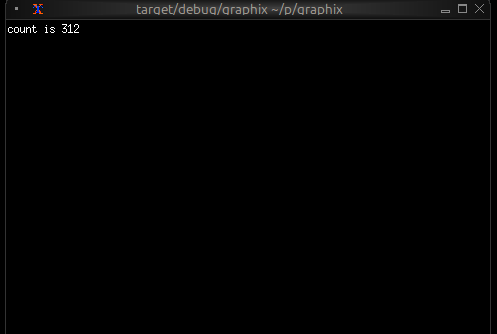
When you type Ctrl+C the shell will exit TUI mode and return to the
normal shell mode. You can use this behavior to experiment with TUI
widgets interactively.
Module Resolution
A crucial feature of the shell is its automatic module path configuration. Understanding how this works is essential for organizing larger projects.
Running a Local File
When you run a local file, the parent directory of that file is automatically added to the module search path:
graphix /home/user/myproject/src/main.gx
This automatically adds /home/user/myproject/src to the module path. Any .gx files in that directory can be loaded as modules.
For example, if you have:
/home/user/myproject/src/
main.gx
utils.gx
math.gx
Then main.gx can use:
mod utils;
mod math;
utils::helper()
The shell will find utils.gx and math.gx because they're in the same directory.
Running a Local Directory
When you run a local directory, the directory is added to the module search path. So for example with the same structure as the above files example you could have executed:
graphix /home/user/myproject/src
and the result would have been the same.
Running from Netidx
When you run a program from netidx, the netidx path is added to the module search path.
If you run:
graphix netidx:/my/graphix/modules/myprogram
The shell:
- subscribes to
/my/graphix/modules/myprogram - Loads and executes it
- Adds
netidx:/my/graphix/modules/myprogramto the module search path
So if myprogram contains mod utils, the shell will look for
netidx:/my/graphix/modules/myprogram/utils.
Module Search Path Priority
The complete module search path, in order of priority:
- File parent directory (if running a local file)
- Netidx path (if running from netidx)
- GRAPHIX_MODPATH entries (from the environment variable)
- Platform-specific init directory:
- Linux:
~/.local/share/graphix - Windows:
%APPDATA%\Roaming\graphix - macOS:
~/Library/Application Support/graphix
- Linux:
The shell searches these paths in order, returning the first match found.
The GRAPHIX_MODPATH Environment Variable
You can extend the module search path by setting GRAPHIX_MODPATH:
export GRAPHIX_MODPATH=netidx:/shared/modules,/home/user/graphix-lib
graphix myprogram.gx
The syntax is a comma-separated list of paths:
- Paths starting with
netidx:are netidx paths - Other paths are treated as filesystem paths
- Escape literal commas in paths with
\
Example:
GRAPHIX_MODPATH=netidx:/foo,/home/user/lib,/path/with\,comma
This adds:
netidx:/foo/home/user/lib/path/with,comma
Structuring Larger Projects
Understanding module resolution makes it straightforward to structure larger projects.
Single-Directory Projects
For small to medium projects, keep all .gx files in a single directory:
myproject/
main.gx
ui.gx
logic.gx
utils.gx
Run with:
graphix myproject/main.gx
The module resolution will automatically find the other .gx files in myproject/.
Hierarchical Projects
For larger projects, use directory hierarchies:
myproject/
main.gx
ui/
mod.gx
widgets.gx
layout.gx
logic/
mod.gx
handlers.gx
state.gx
In this structure:
ui/mod.gxdefines theuimodule (loads submodules)ui/widgets.gxdefines theui::widgetsmodulelogic/mod.gxdefines thelogicmodulelogic/handlers.gxdefines thelogic::handlersmodule
From main.gx:
mod ui;
mod logic;
ui::widgets::button("Click me")
The shell will:
- Find
ui/mod.gxfor theuimodule - Find
ui/widgets.gxwhenui/mod.gxdoesmod widgets - Similarly for the
logichierarchy
Shared Libraries
To share code across multiple projects, use the init directory or GRAPHIX_MODPATH:
Option 1: Init Directory
Place shared modules in your platform's init directory (e.g., ~/.local/share/graphix on Linux):
~/.local/share/graphix/
common.gx
mylib.gx
Any Graphix program can then use:
mod common;
mod mylib;
Option 2: GRAPHIX_MODPATH
Keep shared libraries elsewhere and point to them:
export GRAPHIX_MODPATH=/opt/graphix-libs
graphix myproject/main.gx
Option 3: Netidx
Publish shared modules to netidx for organization-wide sharing:
# Publish the library
netidx publisher /shared/graphix/mylib < mylib.gx
# Use it from any program
GRAPHIX_MODPATH=netidx:/shared/graphix graphix myprogram.gx
The Init Module
In REPL mode only, the shell automatically tries to load a module named init. If found, it's loaded before the REPL starts. If not found, the shell continues silently.
Create an init.gx file in your init directory to:
- Define commonly used utilities
- Set up default imports
Example ~/.local/share/graphix/init.gx:
// Commonly used stdlib modules
use time;
use str;
use array;
// Personal utilities
let debug = |x| { print("DEBUG: [x]"); x };
let clear = || print("\x1b[2J\x1b[H");
Now these are available immediately in any REPL session.
Command-Line Options
The graphix command supports several options for controlling its behavior.
Netidx Configuration
# Use a specific netidx config file
graphix --config /path/to/netidx.toml myprogram.gx
# Specify the netidx authentication mechanism
graphix --auth krb5 myprogram.gx
# Disable netidx entirely (internal-only mode)
graphix --no-netidx myprogram.gx
When netidx is disabled, networking functions work only within the same process.
Publisher Configuration
# Set the publisher bind address
graphix --bind 127.0.0.1:5000 myprogram.gx
# Set a timeout for slow subscribers
graphix --publish-timeout 30 myprogram.gx
Module Resolution
# Set timeout for resolving netidx modules (seconds)
graphix --resolve-timeout 10 myprogram.gx
# Skip loading the init module in REPL mode
graphix --no-init
Compiler Warnings
Control which warnings are enabled with the -W flag:
# Warn about unhandled error operators (?) - default in file mode
graphix -W unhandled myprogram.gx
# Disable warning about unhandled errors
graphix -W no-unhandled myprogram.gx
# Warn about unhandled arithmetic overflow
graphix -W unhandled-arith myprogram.gx
# Warn about unused variables - default in file mode
graphix -W unused myprogram.gx
# Disable unused variable warnings
graphix -W no-unused myprogram.gx
# Make all warnings into errors
graphix -W error myprogram.gx
Multiple warning flags can be combined:
graphix -W unused -W unhandled -W error myprogram.gx
If you specify both a flag and its negation (e.g., unhandled and no-unhandled), the no- variant always wins.
Logging
Enable debug logging for troubleshooting:
RUST_LOG=debug graphix --log-dir /tmp/graphix-logs myprogram.gx
Logs will be written to files in the specified directory.
Summary
The Graphix shell is designed around the reactive nature of Graphix programs:
- Output expressions produce values that can update over time
- Programs keep running to display ongoing updates
- Ctrl+C stops the current expression (REPL) or exits (file mode)
- Module resolution is automatic based on where you run from
- Project structure can be flat or hierarchical
- Shared code can live in the init directory, GRAPHIX_MODPATH, or netidx
Understanding these concepts will help you work efficiently with Graphix, whether you're experimenting in the REPL or building large applications.
The Standard Library
The Graphix standard library is split into several modules with different
functions. The core module is always imported with an implicit use statement.
The modules are documented in the sig format used by dynamic module signatures.
corefundamental functions and typesarrayfunctions for manipulating arraysmapfunctions for manipulating mapsstrfunctions for manipulating stringsreregular expressionsrandrandom number generatortimetimers and time functionsnetnetidx functions
The standard library is a work in progress.
Core
mod core: sig {
type Sint = [ i32, z32, i64, z64 ];
type Uint = [ u32, v32, u64, v64 ];
type Int = [ Sint, Uint ];
type Float = [ f32, f64 ];
type Real = [ Float, decimal ];
type Number = [ Int, Real ];
type NotNull = [Number, string, error, array, datetime, duration];
type Primitive = [NotNull, null];
type PrimNoErr = [Number, string, array, datetime, duration, null];
type Log = [`Trace, `Debug, `Info, `Warn, `Error, `Stdout, `Stderr];
type Result<'r, 'e> = ['r, Error<'e>];
type Option<'a> = ['a, null];
type Pos = {
line: i32,
column: i32
};
type Source = [
`File(string),
`Netidx(string),
`Internal(string),
`Unspecified
];
type Ori = {
parent: [Ori, null],
source: Source,
text: string
};
type ErrChain<'a> = {
cause: [ErrChain<'a>, null],
error: 'a,
ori: Ori,
pos: Pos
};
/// return the first argument when all arguments are equal, otherwise return nothing
val all: fn(@args: Any) -> Any;
/// return true if all arguments are true, otherwise return false
val and: fn(@args: bool) -> bool;
/// return the number of times x has updated
val count: fn(Any) -> i64;
/// return the first argument divided by all subsequent arguments
val divide: fn('a, @args:'a) -> 'a;
/// return e only if e is an error
val filter_err: fn(Result<'a, 'b>) -> Error<'b>;
/// return v if f(v) is true, otherwise return nothing
val filter: fn('a, fn('a) -> bool throws 'e) -> 'a throws 'e;
/// return true if e is an error
val is_err: fn(Any) -> bool;
/// construct an error from the specified string
val error: fn('a) -> Error<'a>;
/// return the maximum value of any argument
val max: fn('a, @args: 'a) -> 'a;
/// return the mean of the passed in arguments
val mean: fn([Number, Array<Number>], @args: [Number, Array<Number>]) -> Result<f64, `MeanError(string)>;
/// return the minimum value of any argument
val min: fn('a, @args:'a) -> 'a;
/// return v only once, subsequent updates to v will be ignored
/// and once will return nothing
val once: fn('a) -> 'a;
/// seq will update j - i times, starting at i and ending at j - 1
val seq: fn(i64, i64) -> Result<i64, `SeqError(string)>;
/// return true if any argument is true
val or: fn(@args: bool) -> bool;
/// return the product of all arguments
val product: fn(@args: [Number, Array<[Number, Array<Number>]>]) -> Number;
/// return the sum of all arguments
val sum: fn(@args: [Number, Array<[Number, Array<Number>]>]) -> Number;
/// when v updates return v if the new value is different from the previous value,
/// otherwise return nothing.
val uniq: fn('a) -> 'a;
/// when v updates place it's value in an internal fifo queue. when clock updates
/// return the oldest value from the fifo queue. If clock updates and the queue is
/// empty, record the number of clock updates, and produce that number of
/// values from the queue when they are available.
val queue: fn(#clock:Any, 'a) -> 'a;
/// hold the most recent value of v internally until clock updates. If v updates
/// more than once before clock updates, older values of v will be discarded,
/// only the most recent value will be retained. If clock updates when no v is held
/// internally, record the number of times it updated, and pass that many v updates
/// through immediately when they happen.
val hold: fn(#clock:Any, 'a) -> 'a;
/// ignore updates to any argument and never return anything
val never: fn(@args: Any) -> _;
/// when v updates, return it, but also print it along
/// with the position of the expression to the specified sink
val dbg: fn(?#dest:[`Stdout, `Stderr, Log], 'a) -> 'a;
/// print a log message to stdout, stderr or the specified log level using the rust log
/// crate. Unlike dbg, log does not also return the value.
val log: fn(?#dest:Log, 'a) -> _;
/// print a raw value to stdout, stderr or the specified log level using the rust log
/// crate. Unlike dbg, log does not also return the value. Does not automatically insert
/// a newline and does not add the source module/location.
val print: fn(?#dest:Log, 'a) -> _;
/// print a raw value to stdout, stderr or the specified log level using the rust log
/// crate followed by a newline. Unlike dbg, log does not also return the value.
val println: fn(?#dest:Log, 'a) -> _;
/// Throttle v so it updates at most every #rate, where rate is a
/// duration (default 0.5 seconds). Intermediate updates that push v
/// over the #rate will be discarded. The most recent update will always
/// be delivered. If the sequence, m0, m1, ..., mN, arrives simultaneously
/// after a period of silence, first m0 will be delivered, then after the rate
/// timer expires mN will be delivered, m1, ..., m(N-1) will be discarded.
val throttle: fn(?#rate:duration, 'a) -> 'a;
}
Net
mod net: sig {
type Table = { rows: Array<string>, columns: Array<(string, v64)> };
type ArgSpec = { name: string, doc: string, default: Any };
/// write the value to the specified path
val write: fn(string, Any) -> Result<_, `WriteError(string)>;
/// subscribe to the specified path
val subscribe: fn(string) -> Result<Primitive, `SubscribeError(string)>;
/// call the specified rpc
val call: fn(string, Array<(string, Any)>) -> Result<Primitive, `RpcError(string)>;
/// Publish an rpc. When the rpc is called f will be called with the arguments
/// sent by the caller, and whatever f returns will be sent back to the caller.
/// If f does not return, the caller will hang waiting for a reply.
val rpc: fn(
#path:string,
#doc:string,
#spec:Array<ArgSpec>,
#f:fn(Array<(string, Any)>) -> Any throws 'e
) -> Result<_, `PublishRpcError(string)> throws 'e;
/// list paths under the specified path. If #update is specified, then the list will
/// be refreshed each time clock is triggered. If update is not specified, the list will
/// be updated each second
val list: fn(?#update:Any, string) -> Result<Array<string>, `ListError(string)>;
/// list the table under the specified path. If #update is specified, then the table
/// will be refreshed each time clock is triggered. If update is not specified, the table
/// will be updated each second
val list_table: fn(?#update:Any, string) -> Result<Table, `ListError(string)>;
/// Publish the specified value at the specified path. Whenever the value updates,
/// the new value will be sent to subscribers. If #on_write is specified, then if
/// subscribers write to the value on_write will be called with the written value.
/// on_write need not return anything.
val publish: fn(?#on_write:fn(Any) -> _ throws 'e, string, Any) -> Result<_, `PublishError(string)> throws 'e;
}
Array
mod array: sig {
type Direction = [
`Ascending,
`Descending
];
/// filter returns a new array containing only elements where f returned true
val filter: fn(Array<'a>, fn('a) -> bool throws 'e) -> Array<'a> throws 'e;
/// filter_map returns a new array containing the outputs of f
/// that were not null
val filter_map: fn(Array<'a>, fn('a) -> Option<'b> throws 'e) -> Array<'b> throws 'e;
/// return a new array where each element is the output of f applied to the
/// corresponding element in a
val map: fn(Array<'a>, fn('a) -> 'b throws 'e) -> Array<'b> throws 'e;
/// return a new array where each element is the output of f applied to the
/// corresponding element in a, except that if f returns an array then it's
/// elements will be concatenated to the end of the output instead of nesting.
val flat_map: fn(Array<'a>, fn('a) -> ['b, Array<'b>] throws 'e) -> Array<'b> throws 'e;
/// return the result of f applied to the init and every element of a in
/// sequence. f(f(f(init, a[0]), a[1]), ...)
val fold: fn(Array<'a>, 'b, fn('b, 'a) -> 'b throws 'e) -> 'b throws 'e;
/// each time v updates group places the value of v in an internal buffer
/// and calls f with the length of the internal buffer and the value of v.
/// If f returns true then group returns the internal buffer as an array
/// otherwise group returns nothing.
val group: fn('a, fn(i64, 'a) -> bool throws 'e) -> Array<'a> throws 'e;
/// iter produces an update for every value in the array a. updates are produced
/// in the order they appear in a.
val iter: fn(Array<'a>) -> 'a;
/// iterq produces an update for each value in a, but only when clock updates. If
/// clock does not update but a does, then iterq will store each a in an internal
/// fifo queue. If clock updates but a does not, iterq will record the number of
/// times it was triggered, and will update immediately that many times when a
/// updates.
val iterq: fn(#clock:Any, Array<'a>) -> 'a;
/// returns the length of a
val len: fn(Array<'a>) -> i64;
/// returns the concatenation of two or more arrays. O(N) where
/// N is the size of the final array.
val concat: fn(Array<'a>, @args: Array<'a>) -> Array<'a>;
/// return an array with the args added to the end. O(N)
/// where N is the size of the final array
val push: fn(Array<'a>, @args: 'a) -> Array<'a>;
/// return an array with the args added to the front. O(N)
/// where N is the size of the final array
val push_front: fn(Array<'a>, @args: 'a) -> Array<'a>;
/// return an array no larger than #n with the args
/// added to the back. If pushing the args would cause the
/// array to become bigger than #n, remove values from the
/// front. O(N) where N is the window size.
val window: fn(#n:i64, Array<'a>, @args: 'a) -> Array<'a>;
/// flatten takes an array with two levels of nesting and produces a flat array
/// with all the nested elements concatenated together.
val flatten: fn(Array<Array<'a>>) -> Array<'a>;
/// applies f to every element in a and returns the first element for which f
/// returns true, or null if no element returns true
val find: fn(Array<'a>, fn('a) -> bool throws 'e) -> Option<'a> throws 'e;
/// applies f to every element in a and returns the first non null output of f
val find_map: fn(Array<'a>, fn('a) -> Option<'b> throws 'e) -> Option<'b> throws 'e;
/// return a new copy of a sorted ascending (by default). If numeric is true then
/// values will be cast to numbers before comparison, resulting in a numeric sort
/// even if the values are strings.
val sort: fn(?#dir:Direction, ?#numeric:bool, Array<'a>) -> Array<'a>;
/// return an array of pairs where the first element is the index in
/// the array and the second element is the value.
val enumerate: fn(Array<'a>) -> Array<(i64, 'a)>;
/// given two arrays, return a single array of pairs where the first
/// element in the pair is from the first array and the second element in
/// the pair is from the second array. The final array's length will be the
/// minimum of the length of the input arrays
val zip: fn(Array<'a>, Array<'b>) -> Array<('a, 'b)>;
/// given an array of pairs, return two arrays with the first array
/// containing all the elements from the first pair element and second
/// array containing all the elements of the second pair element.
val unzip: fn(Array<('a, 'b)>) -> (Array<'a>, Array<'b>);
}
Map
mod map: sig {
/// return a new map where each element is the output of f applied to
/// the corresponding key value pair in the current map
val map: fn(Map<'a, 'b>, fn(('a, 'b)) -> ('c, 'd) throws 'e) -> Map<'c, 'd> throws 'e;
/// return a new map containing only the key-value pairs where f applied to
/// (key, value) returns true
val filter: fn(Map<'a, 'b>, fn(('a, 'b)) -> bool throws 'e) -> Map<'a, 'b> throws 'e;
/// filter_map returns a new map containing the outputs of f
/// that were not null
val filter_map: fn(Map<'a, 'b>, fn(('a, 'b)) -> Option<('c, 'd)> throws 'e) -> Map<'c, 'd> throws 'e;
/// return the result of f applied to the init and every k, v pair of m in
/// sequence. f(f(f(init, (k0, v0)), (k1, v1)), ...)
val fold: fn(Map<'a, 'b>, 'c, fn('c, ('a, 'b)) -> 'c throws 'e) -> 'c throws 'e;
/// return the length of the map
val len: fn(Map<'a, 'b>) -> i64;
/// get the value associated with the key k in the map m, or null if not present
val get: fn(Map<'a, 'b>, 'a) -> Option<'b>;
/// insert a new value into the map
val insert: fn(Map<'a, 'b>, 'a, 'b) -> Map<'a, 'b>;
/// remove the value associated with the specified key from the map
val remove: fn(Map<'a, 'b>, 'a) -> Map<'a, 'b>;
/// iter produces an update for every key-value pair in the map m.
/// updates are produced in the order they appear in m.
val iter: fn(Map<'a, 'b>) -> ('a, 'b);
/// iterq produces an update for each value in m, but only when clock updates. If
/// clock does not update but m does, then iterq will store each m in an internal
/// fifo queue. If clock updates but m does not, iterq will record the number of
/// times it was triggered, and will update immediately that many times when m
/// updates.
val iterq: fn(#clock:Any, Map<'a, 'b>) -> ('a, 'b);
}
Str
mod str: sig {
type Escape = {
escape: string,
escape_char: string,
tr: Array<(string, string)>
};
/// the default escaping config escapes \, /, \n, \r, \t, \0, and non printable
/// characters to Unicode \u{HHHH} format
val default_escape: Escape = {
escape: "\\/\n\r\t\0",
escape_char: "\\",
tr: [("\n", "n"), ("\r", "r"), ("\t", "t"), ("\0", "0")]
};
/// return true if s starts with #pfx, otherwise return false
val starts_with: fn(#pfx:string, string) -> bool;
/// return true if s ends with #sfx otherwise return false
val ends_with: fn(#sfx:string, string) -> bool;
/// return true if s contains #part, otherwise return false
val contains: fn(#part:string, string) -> bool;
/// if s starts with #pfx then return s with #pfx stripped otherwise return null
val strip_prefix: fn(#pfx:string, string) -> Option<string>;
/// if s ends with #sfx then return s with #sfx stripped otherwise return null
val strip_suffix: fn(#sfx:string, string) -> Option<string>;
/// return s with leading and trailing whitespace removed
val trim: fn(string) -> string;
/// return s with leading whitespace removed
val trim_start: fn(string) -> string;
/// return s with trailing whitespace removed
val trim_end: fn(string) -> string;
/// replace all instances of #pat in s with #rep and return s
val replace: fn(#pat:string, #rep:string, string) -> string;
/// return the parent path of s, or null if s does not have a parent path
val dirname: fn(string) -> Option<string>;
/// return the leaf path of s, or null if s is not a path. e.g. /foo/bar -> bar
val basename: fn(string) -> Option<string>;
/// return a single string with the arguments concatenated and separated by #sep
val join: fn(#sep:string, @args: [string, Array<string>]) -> string;
/// concatenate the specified strings into a single string
val concat: fn(@args: [string, Array<string>]) -> string;
/// escape all the characters in #to_escape in s with the escape character #escape.
/// The escape character must appear in #to_escape
val escape: fn(?#esc:Escape, string) -> Result<string, `StringError(string)>;
/// unescape all the characters in s escaped by the specified #escape character
val unescape: fn(?#esc:Escape, string) -> Result<string, `StringError(string)>;
/// split the string by the specified #pat and return an array of each part
val split: fn(#pat:string, string) -> Array<string>;
/// reverse split the string by the specified #pat and return an array of each part
val rsplit: fn(#pat:string, string) -> Array<string>;
/// split the string at most #n times by the specified #pat and return an array of
/// each part
val splitn: fn(#pat:string, #n:i64, string) -> Result<Array<string>, `StringSplitError(string)>;
/// reverse split the string at most #n times by the specified #pat and return an array of
/// each part
val rsplitn: fn(#pat:string, #n:i64, string) -> Result<Array<string>, `StringSplitError(string)>;
/// give an escape character #esc, and a #sep character, split the string s into an array
/// of parts delimited by it's non escaped separator characters.
val split_escaped: fn(#esc:string, #sep:string, string) -> Result<Array<string>, `SplitEscError(string)>;
/// give an escape character #esc, and a #sep character, split the string s into an array
/// of at most #n parts delimited by it's non escaped separator characters.
val splitn_escaped: fn(#n:i64, #esc:string, #sep:string, string) -> Result<Array<string>, `SplitNEscError(string)>;
/// split the string once from the beginning by #pat and return a
/// tuple of strings, or return null if #pat was not found in the string
val split_once: fn(#pat:string, string) -> Option<(string, string)>;
/// split the string once from the end by #pat and return a tuple of strings
/// or return null if #pat was not found in the string
val rsplit_once: fn(#pat:string, string) -> Option<(string, string)>;
/// change the string to lowercase
val to_lower: fn(string) -> string;
/// change the string to uppercase
val to_upper: fn(string) -> string;
/// C style sprintf, implements most C standard format args
val sprintf: fn(string, @args: Any) -> string;
/// return the length of the string in bytes
val len: fn(string) -> i64;
/// extract a substring of s starting at #start with length #len.
/// both #start and #len are Unicode character indexes,
/// not byte indexes. e.g. str::sub(#start:0, #len:2, "💖💖💖")
/// will return "💖💖"
val sub: fn(#start:i64, #len:i64, string) -> Result<string, `SubError(string)>;
/// parse the specified string as a value. return the value on success or an
/// error on failure. Note, if you feed the parser a well formed error then
/// parse will also return an error
val parse: fn(string) -> Result<PrimNoErr, `ParseError(string)>;
}
Re
mod re: sig {
/// return true if the string is matched by #pat, otherwise return false.
/// return an error if #pat is invalid.
val is_match: fn(#pat:string, string) -> Result<bool, `ReError(string)>;
/// return an array of instances of #pat in s. return an error if #pat is
/// invalid.
val find: fn(#pat:string, string) -> Result<Array<string>, `ReError(string)>;
/// return an array of captures matched by #pat. The array will have an element for each
/// capture, regardless of whether it matched or not. If it did not match the corresponding
/// element will be null. Return an error if #pat is invalid.
val captures: fn(#pat:string, string) -> Result<Array<Array<Option<string>>>, `ReError(string)>;
/// return an array of strings split by #pat. return an error if #pat is invalid.
val split: fn(#pat:string, string) -> Result<Array<string>, `ReError(string)>;
/// split the string by #pat at most #limit times and return an array of the parts.
/// return an error if #pat is invalid
val splitn: fn(#pat:string, #limit:i64, string) -> Result<Array<string>, `ReError(string)>;
}
Time
mod time: sig {
/// When v updates wait timeout and then return it. If v updates again
/// before timeout expires, reset the timeout and continue waiting.
val after_idle: fn([duration, Number], 'a) -> 'a;
/// timer will wait timeout and then update with the current time.
/// If repeat is true, it will do this forever. If repeat is a number n,
/// it will do this n times and then stop. If repeat is false, it will do
/// this once.
val timer: fn([duration, Number], [bool, Number]) -> Result<datetime, `TimerError(string)>;
/// return the current time each time trigger updates
val now: fn(Any) -> datetime;
}
Rand
mod rand: sig {
/// generate a random number between #start and #end (exclusive)
/// every time #clock updates. If start and end are not specified,
/// they default to 0.0 and 1.0
val rand: fn<'a: [Int, Float]>(?#start:'a, ?#end:'a, #clock:Any) -> 'a;
/// pick a random element from the array and return it. Update
/// each time the array updates. If the array is empty return
/// nothing.
val pick: fn(Array<'a>) -> 'a;
/// return a shuffled copy of a
val shuffle: fn(Array<'a>) -> Array<'a>;
}
Building UIs With Graphix
Graphix excels at building user interfaces thanks to its reactive dataflow nature. Changes in data automatically propagate through the UI graph, updating only the components that need to change. This makes building complex, interactive applications surprisingly straightforward.
Why Graphix for UIs?
Traditional UI frameworks require you to manually manage state changes, update DOM elements, and coordinate between different parts of your application. Graphix eliminates this complexity by treating your entire application as a reactive graph where:
- Data flows automatically: When underlying data changes, dependent UI components update automatically
- State is declarative: You describe what the UI should look like, not how to update it
- Composition is natural: Complex UIs are built by composing simple, reusable components
- Performance is built-in: Only components that depend on changed data will re-render
Currently Targeting TUIs
The first UI target for Graphix is TUIs. Surprisingly complex and useful UIs can be built in the standard terminal, and it is the absolute lowest common denominator that will always be present even on a bandwidth constrained remote system. Graphix uses the excellent ratatui library as a basis to build upon.
Future UI Targets
While Graphix currently implements support for building TUIs, the reactive architecture makes it well-suited for other UI paradigms:
- Desktop Applications: Native desktop applications. Support for this is planned next.
- Web UIs: The dataflow model maps naturally to modern web frameworks
- Mobile UIs: Touch-based interfaces with gesture handling
The core concepts of reactive data flow, component composition, and declarative styling will apply across all UI targets.
Getting Started
The Graphix shell will automatically build a UI if the last value in your module has type tui::Widget (or in the future gui::Widget). You can try out the examples in this book by pasting them in a file, or even typing (the short ones) into the interactive REPL. Each TUI component has detailed documentation in the following sections, including complete API references and practical examples.
You can also study and run the examples in graphix-shell/examples/. Start with simple components like text.gx and block.gx, then work your way up to more complex examples like browser.gx and table-advanced.gx.
Terminal User Interfaces (TUIs)
Graphix includes a comprehensive TUI library built on top of the popular Rust ratatui crate. This allows you to build rich, interactive terminal applications with:
Core Components
The TUI library provides all the essential building blocks:
- Layout: Flexible container system with horizontal/vertical arrangement and various sizing constraints
- Block: Wrapper component that adds borders, titles, and styling to other components
- Text: Rich text rendering with styling, colors, and formatting
- Paragraph: Multi-line text with scrolling and word wrapping
Interactive Widgets
- Table: Sortable, selectable data tables with custom styling
- List: Scrollable lists with selection and highlighting
- Tabs: Tabbed interface for organizing content
- Browser: Netidx browser component
- Calendar: Date picker and event display
Data Visualization
- Chart: Line charts with multiple datasets, custom axes, and styling
- Bar Chart: Grouped and individual bar charts with labels
- Sparkline: Compact inline charts perfect for dashboards
- Gauge: Progress indicators and meters
- Canvas: Low-level drawing surface for custom graphics
Input Handling
Interactive components use the input widget to handle UI events that flow through the widget graph from parent to child. Parents can choose to pass on events they receive or not. See the input widget for more details.
Building Your First TUI
Here's a simple example that demonstrates the core concepts:
use tui;
use tui::block;
use tui::text;
use tui::layout;
let counter = 0;
let clock = time::timer(duration:1.s, true);
counter <- clock ~ (counter + 1);
let content = text(&"Counter: [counter]");
block(
#border: &`All,
#title: &line("My First TUI"),
#style: &style(#fg: `Green),
&content
)
This creates a bordered block with a counter that increments every second. The key insight is that when counter changes, the text automatically updates because of Graphix's reactive nature.

Styling and Theming
Graphix TUIs support rich styling with:
- Colors: Named colors (
Red,Green,Blue), indexed colors (Indexed(202)), and RGB (Rgb({r: 255, g: 100, b: 50})) - Text Effects: Bold, italic, underline, strikethrough
- Background Colors: Set background colors for any component
- Conditional Styling: Use
selectexpressions to change styles based on state
Many widgets take optional style arguments, allowing styling to be applied at many levels.
use tui;
let is_selected = true;
style(
#fg: select is_selected { true => `Yellow, false => `White },
#bg: `DarkGray,
#add_modifier: [`Bold]
)
Layout System
The layout system provides flexible component arrangement:
- Direction:
HorizontalorVertical - Constraints:
Percentage(50),Length(20),Min(10),Max(100) - Alignment:
Left,Center,Rightfor horizontal;Top,Center,Bottomfor vertical - Focus Management: Built-in focus handling for interactive components
use tui;
use tui::layout;
use tui::text;
let selected_pane = 0;
let sidebar = text(&"Sidebar");
let main_content = text(&"Main");
layout(
#direction: &`Horizontal,
#focused: &selected_pane,
&[
child(#constraint: `Percentage(30), sidebar),
child(#constraint: `Percentage(70), main_content)
]
)
State Management
In Graphix, UI state is just regular program state. Use variables to track:
- Selection states in lists and tables
- Input field contents
- Window/pane focus
- Application modes (normal, edit, command)
State changes automatically trigger UI updates:
use tui;
use tui::list;
use tui::text;
let selected_item = 0;
let items = [line("Item 1"), line("Item 2"), line("Item 3")];
let arrow_pressed = never();
// When user presses down arrow assume the event is handled as
// shown above and arrow_pressed is set using connect
selected_item <- arrow_pressed ~ ((selected_item + 1) % array::len(items));
// UI automatically reflects the change
list(#selected: &selected_item, &items)
Real-time Data Integration
Graphix TUIs excel at displaying real-time data. Connect to data sources via netidx and the UI updates automatically:
use tui;
use tui::gauge;
use tui::text;
// Subscribe to live data
let temperature = cast<f64>(net::subscribe("/sensors/temperature")?)?;
// Will display updates automatically when data changes
gauge(
#gauge_style: &style(#fg: `Red),
#label: &span("Temperature"),
&(temperature / 100.0)
)
style
The Bar Chart Widget
The barchart widget displays categorical data as vertical bars, supporting grouped bars, custom styling, and dynamic updates. It's ideal for comparing values across categories, showing rankings, or displaying resource usage.
APIs
mod barchart: sig {
/// Creates a bar chart from bar groups
val bar_chart: fn(
?#max: &i64,
?#bar_width: &i64,
?#bar_gap: &i64,
?#group_gap: &i64,
?#style: &Style,
&Array<BarGroup>
) -> Widget;
/// Creates a group of bars
val bar_group: fn(?#label: Line, Array<Bar>) -> BarGroup;
/// Creates an individual bar
val bar: fn(
?#style: &Style,
?#label: &Line,
?#text_value: &Line,
&i64
) -> Bar;
}
Parameters
bar_chart
- max - Maximum value for chart scale (auto-scales if not specified)
- bar_width - Width of each bar in characters
- bar_gap - Space between bars within a group
- group_gap - Space between bar groups
- style - Base style for the chart
bar_group
- label - Line labeling the group (displayed below bars)
bar
- style - Style for the bar
- label - Line labeling the bar
- text_value - Line displayed above bar (defaults to numeric value)
Examples
Basic Usage
use tui;
use tui::barchart;
let bar1 = bar(
#style: &style(#fg: `Cyan),
#label: &line("Sales"),
&42
);
bar_chart(&[bar_group(#label: line("Q1"), [bar1])])

Grouped Bars with Dynamic Data
use tui;
use tui::barchart;
use tui::block;
use rand;
let clock = time::timer(duration:0.7s, true);
let group0 = [
bar(#style: &style(#fg: `Red), #label: &line("CPU"), &rand(#start:0, #end:100, #clock)),
bar(#style: &style(#fg: `Yellow), #label: &line("Memory"), &rand(#start:25, #end:200, #clock))
];
let group1 = [
bar(#style: &style(#fg: `Cyan), #label: &line("Network"), &rand(#start:0, #end:50, #clock)),
bar(#style: &style(#fg: `Magenta), #label: &line("Disk"), &rand(#start:1, #end:25, #clock))
];
let chart = bar_chart(
#bar_gap: &2,
#bar_width: &8,
#max: &200,
&[
bar_group(#label: line("Server 1"), group0),
bar_group(#label: line("Server 2"), group1)
]
);
block(#border: &`All, #title: &line("Resource Usage"), &chart)

Color-coded Values
use tui;
use tui::barchart;
let make_colored_bar = |label, value| {
let color = select value {
v if v > 80 => `Red,
v if v > 50 => `Yellow,
_ => `Green
};
bar(#style: &style(#fg: color), #label: &line(label), &value)
};
let bars = [
make_colored_bar("Service A", 35),
make_colored_bar("Service B", 65),
make_colored_bar("Service C", 92)
];
bar_chart(&[bar_group(bars)])

See Also
- chart - For continuous data visualization
- sparkline - For compact trend display
- gauge - For single value display
The Block Widget
The block widget is a container that wraps other widgets with optional borders, titles, and styling. It's one of the most commonly used widgets for creating structured layouts and visually separating different sections of your TUI.
API
mod block: sig {
type Borders = [`All, `None, `Top, `Bottom, `Left, `Right];
/// Creates a block widget that wraps content with borders and styling
val block: fn(
?#border: &Borders,
?#border_style: &Style,
?#title: &Line,
?#title_bottom: &Line,
?#style: &Style,
?#size: &Size,
&Widget
) -> Widget;
}
Parameters
- border - Border style:
All,None,Top,Bottom,Left, orRight - border_style - Style for the border
- title - Line displayed at the top of the block
- title_bottom - Line displayed at the bottom of the block
- style - Style for the block's interior
- size (output) - Rendered size of the block
Examples
Basic Usage
use tui;
use tui::block;
use tui::paragraph;
let content = paragraph(&"Hello, World!");
block(
#border: &`All,
#title: &line("My Block"),
&content
)

Focus Indication
Use dynamic styling to show which block has focus:
use tui;
use tui::block;
use tui::paragraph;
let focused_block = 0;
let content = paragraph(&"Content here");
block(
#border: &`All,
#border_style: &style(
#fg: select focused_block {
0 => `Red,
_ => `Yellow
}
),
#title: &line("Block 1"),
&content
)

Dynamic Titles
Titles can contain reactive values that update automatically:
use tui;
use tui::block;
use tui::paragraph;
let count = 0;
let timer = time::timer(duration:1.s, true);
count <- timer ~ (count + 1);
let content = paragraph(&"Content here");
block(
#border: &`All,
#title: &line("Counter: [count]"),
&content
)

See Also
- layout - For arranging multiple blocks
- paragraph - Common content for blocks
- text - For creating styled text content
The Browser Widget
The browser widget provides a specialized interface for browsing and interacting with netidx hierarchies. It displays netidx paths in a tree structure with keyboard navigation, selection, and cursor movement support.
APIs
mod browser: sig {
type MoveCursor = [`Left(i64), `Right(i64), `Up(i64), `Down(i64)];
/// Creates a browser widget for navigating netidx hierarchies
val browser: fn(
?#cursor: MoveCursor,
?#selected_row: &string,
#selected_path: &string,
?#size: &Size,
string
) -> Widget;
}
Parameters
- cursor - Programmatic cursor movement:
Left(n),Right(n),Up(n),Down(n) - selected_row (output) - Display name of the selected row
- selected_path (output, required) - Full path of the currently selected item
- size (output) - Rendered size of the browser
Examples
Basic Usage
use tui;
use tui::browser;
let selected_path: string = never();
browser(
#size: {width: 40, height: 10},
#selected_path: &selected_path,
"/" // Start browsing from root
)

Basic Navigation
use tui;
use tui::browser;
use tui::input_handler;
let path = "/";
let selected_path: string = never();
let selected_row: string = never();
let cursor: MoveCursor = never();
let handle_event = |e: Event| -> [`Stop, `Continue] select e {
`Key(k) => select k.kind {
`Press => select k.code {
e@ `Up => { cursor <- e ~ `Up(1); `Stop },
e@ `Down => { cursor <- e ~ `Down(1); `Stop },
e@ `Left => { cursor <- e ~ `Left(1); `Stop },
e@ `Right => { cursor <- e ~ `Right(1); `Stop },
e@ `Enter => { path <- e ~ selected_row; `Stop },
_ => `Continue
},
_ => `Continue
},
_ => `Continue
};
input_handler(
#handle: &handle_event,
&browser(
#size: {width: 80, height: 24},
#cursor,
#selected_path: &selected_path,
#selected_row: &selected_row,
path
)
)

See Also
- list - For simpler selection interfaces
- table - For tabular data display
- block - For containing browsers with borders
The Calendar Widget
The calendar widget displays a monthly calendar view with support for highlighting specific dates and displaying events. It's perfect for date pickers, event schedulers, and time-based visualizations.
APIs
mod calendar: sig {
/// Creates a calendar widget displaying a month
val calendar: fn(
?#show_month: &Style,
?#show_weekday: &Style,
?#show_surrounding: &Style,
?#events: &Array<CalendarEvent>,
&Date
) -> Widget;
/// Creates an event marker for a specific date
val calendar_event: fn(Style, Date) -> CalendarEvent;
/// Creates a date object
val date: fn(i64, i64, i64) -> Date; // (year, month, day)
}
Parameters
calendar
- show_month - Style for the month header
- show_weekday - Style for weekday headers (Mon, Tue, etc.)
- show_surrounding - Style for dates from surrounding months
- events - Array of CalendarEvent objects to highlight dates
calendar_event
Takes a style and a date to create an event marker.
date
Creates a date with year, month (1-12), and day (1-31).
Examples
Basic Usage
use tui;
use tui::calendar;
let current_date = date(2024, 5, 15);
calendar(¤t_date)

Event Calendar
use tui;
use tui::calendar;
use tui::block;
use tui::text;
let today = date(2024, 5, 15);
let events = [
calendar_event(style(#fg: `Red), date(2024, 5, 5)),
calendar_event(style(#fg: `Green), date(2024, 5, 15)),
calendar_event(style(#fg: `Yellow), date(2024, 5, 20)),
calendar_event(style(#fg: `Cyan), date(2024, 5, 28))
];
block(
#border: &`All,
#title: &line("May 2024"),
&calendar(
#show_month: &style(#fg: `Yellow, #add_modifier: [`Bold]),
#show_weekday: &style(#fg: `Cyan),
#show_surrounding: &style(#fg: `DarkGray),
#events: &events,
&today
)
)

Color-coded Events by Type
use tui;
use tui::calendar;
type EventType = [`Meeting, `Deadline, `Holiday, `Birthday];
type CalendarEntry = {date: Date, event_type: EventType};
let entries = [
{date: date(2024, 5, 5), event_type: `Meeting},
{date: date(2024, 5, 10), event_type: `Deadline},
{date: date(2024, 5, 15), event_type: `Holiday},
{date: date(2024, 5, 25), event_type: `Birthday}
];
let event1 = calendar_event(style(#fg: `Blue), date(2024, 5, 5));
let event2 = calendar_event(style(#fg: `Red), date(2024, 5, 10));
let event3 = calendar_event(style(#fg: `Green), date(2024, 5, 15));
let event4 = calendar_event(style(#fg: `Magenta), date(2024, 5, 25));
let events = [event1, event2, event3, event4];
calendar(#events: &events, &date(2024, 5, 1))
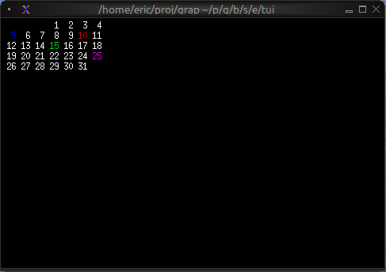
See Also
- table - For tabular date-based data
- list - For event lists
- block - For containing calendars with borders
The Canvas Widget
The canvas widget provides a low-level drawing surface for custom graphics. You can draw lines, circles, rectangles, points, and text labels at specific coordinates, making it perfect for diagrams, plots, and custom visualizations.
APIs
mod canvas: sig {
type Bounds = {min: f64, max: f64};
type Shape = [
`Line({color: Color, x1: f64, y1: f64, x2: f64, y2: f64}),
`Circle({color: Color, x: f64, y: f64, radius: f64}),
`Rectangle({color: Color, x: f64, y: f64, width: f64, height: f64}),
`Points({color: Color, coords: Array<(f64, f64)>}),
`Label({line: Line, x: f64, y: f64})
];
/// Creates a canvas widget for custom graphics
val canvas: fn(
?#background_color: &Color,
?#marker: &Marker,
#x_bounds: &Bounds,
#y_bounds: &Bounds,
&Array<&Shape>
) -> Widget;
}
Parameters
- background_color - Background color for the canvas
- marker - Marker type:
Dot,Braille(default), orBlock - x_bounds - X-axis range with
minandmaxfields (required) - y_bounds - Y-axis range with
minandmaxfields (required)
Shape Types
Line
`Line({color: `Red, x1: 0.0, y1: 0.0, x2: 10.0, y2: 5.0})
Circle
`Circle({color: `Blue, x: 5.0, y: 5.0, radius: 2.0})
Rectangle
`Rectangle({color: `Green, x: 2.0, y: 2.0, width: 3.0, height: 4.0})
Points
`Points({color: `Yellow, coords: [(1.0, 1.0), (2.0, 3.0), (3.0, 1.5)]})
Label
`Label({line: line("Hello"), x: 5.0, y: 0.5})
Examples
Basic Usage
use tui;
use tui::canvas;
let line = `Line({color: `Red, x1: 0.0, y1: 0.0, x2: 10.0, y2: 5.0});
let circle = `Circle({color: `Blue, x: 5.0, y: 5.0, radius: 2.0});
canvas(
#x_bounds: &{min: 0.0, max: 10.0},
#y_bounds: &{min: 0.0, max: 10.0},
&[&line, &circle]
)

Function Plotting
use tui;
use tui::canvas;
let coords = [
(0.0, 0.0), (0.5, 0.48), (1.0, 0.84), (1.5, 1.0),
(2.0, 0.91), (2.5, 0.60), (3.0, 0.14), (3.5, -0.35),
(4.0, -0.76), (4.5, -0.98), (5.0, -0.96)
];
let plot = `Points({color: `Cyan, coords});
canvas(
#x_bounds: &{min: 0.0, max: 10.0},
#y_bounds: &{min: -1.0, max: 1.0},
&[&plot]
)
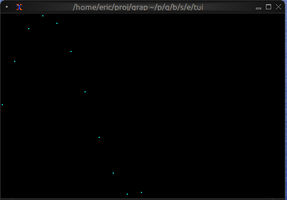
Network Diagram
use tui;
use tui::canvas;
use tui::text;
let circle1 = `Circle({color: `Blue, x: 2.0, y: 5.0, radius: 0.5});
let circle2 = `Circle({color: `Blue, x: 8.0, y: 5.0, radius: 0.5});
let circle3 = `Circle({color: `Blue, x: 5.0, y: 8.0, radius: 0.5});
let line1 = `Line({color: `White, x1: 2.0, y1: 5.0, x2: 8.0, y2: 5.0});
let line2 = `Line({color: `White, x1: 2.0, y1: 5.0, x2: 5.0, y2: 8.0});
let line3 = `Line({color: `White, x1: 8.0, y1: 5.0, x2: 5.0, y2: 8.0});
let all_shapes = [&line1, &line2, &line3, &circle1, &circle2, &circle3];
canvas(
#x_bounds: &{min: 0.0, max: 10.0},
#y_bounds: &{min: 0.0, max: 10.0},
&all_shapes
)
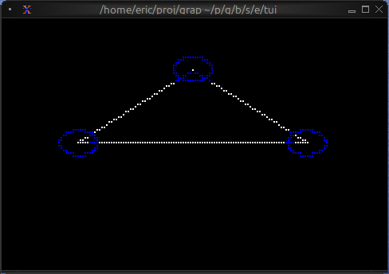
Animated Graphics
use tui;
use tui::canvas;
let clock = time::timer(duration:0.1s, true);
let x = 0.0;
x <- {
let new_x = (clock ~ x) + 0.1;
select new_x > 10.0 { true => 0.0, false => new_x }
};
let moving_circle = `Circle({color: `Red, x, y: 5.0, radius: 1.0});
canvas(
#x_bounds: &{min: 0.0, max: 10.0},
#y_bounds: &{min: 0.0, max: 10.0},
&[&moving_circle]
)
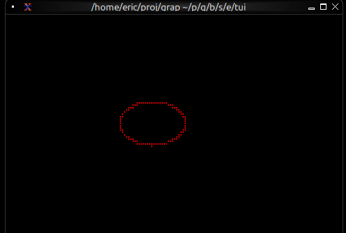
Marker Comparison
- Braille: Highest resolution, smoothest curves, best for detailed graphics
- Dot: Fast rendering, lower resolution, good for simple shapes
- Block: High contrast, blocky appearance, good for filled areas
Coordinate System
- Origin (0, 0) is at the bottom-left
- X increases to the right
- Y increases upward
- Shapes outside bounds are clipped
See Also
The Chart Widget
The chart widget renders line charts with multiple datasets, custom axes, labels, and styling. It's ideal for visualizing time series data, trends, sensor readings, and any numeric data relationships.
APIs
mod chart: sig {
type GraphType = [`Line, `Scatter];
type Marker = [`Dot, `Braille, `Block];
/// Creates a chart widget with datasets and axes
val chart: fn(
?#style: &Style,
#x_axis: &Axis,
#y_axis: &Axis,
&Array<Dataset>
) -> Widget;
/// Creates an axis configuration
val axis: fn(
?#title: Line,
?#labels: Array<Line>,
?#style: Style,
{min: f64, max: f64}
) -> Axis;
/// Creates a dataset to display on the chart
val dataset: fn(
?#style: &Style,
?#graph_type: &GraphType,
?#marker: &Marker,
?#name: &Line,
&Array<(f64, f64)>
) -> Dataset;
}
Parameters
chart
- style - Background style for the chart area
- x_axis - X-axis configuration (required)
- y_axis - Y-axis configuration (required)
axis
- title - Line for axis title
- labels - Array of lines displayed along axis
- style - Style for axis lines and ticks
dataset
- style - Style for the dataset (line and markers)
- graph_type -
LineorScatter - marker -
Dot,Braille, orBlock - name - Line naming the dataset (for legends)
Examples
Basic Usage
use tui;
use tui::chart;
let data: Array<(f64, f64)> = [(0.0, 0.0), (1.0, 1.0), (2.0, 4.0), (3.0, 9.0)];
let ds = dataset(
#style: &style(#fg: `Cyan),
#graph_type: &`Line,
#marker: &`Dot,
&data
);
chart(
#x_axis: &axis({min: 0.0, max: 3.0}),
#y_axis: &axis({min: 0.0, max: 9.0}),
&[ds]
)

Real-time Data Visualization
use tui;
use tui::chart;
use tui::text;
let data: Array<(f64, f64)> = {
let clock = time::timer(duration:0.5s, true);
let x = 0.0;
x <- (clock ~ x) + 1.0;
let y = rand::rand(#clock, #start: f64:0., #end: f64:100.);
let a = [];
a <- array::window(#n: 32, clock ~ a, (x, y));
a
};
let ds = dataset(
#style: &style(#fg: `Cyan),
#graph_type: &`Line,
#marker: &`Dot,
&data
);
let label_style = style(#fg: `Yellow);
chart(
#style: &style(#bg: `Rgb({r: 20, g: 20, b: 20})),
#x_axis: &axis(
#title: line(#style: label_style, "Time (s)"),
#labels: [
line(#style: label_style, "[(data[0]$).0]"),
line(#style: label_style, "[(data[-1]$).0]")
],
{min: (data[0]$).0, max: (data[-1]$).0}
),
#y_axis: &axis(
#title: line(#style: label_style, "Value"),
#labels: [
line("0"), line("50"), line("100")
],
{min: 0.0, max: 100.0}
),
&[ds]
)

Multiple Datasets
use tui;
use tui::chart;
use tui::text;
let temp_data = [(0.0, 20.0), (1.0, 22.0), (2.0, 21.5)];
let humidity_data = [(0.0, 50.0), (1.0, 55.0), (2.0, 52.0)];
let temp_ds = dataset(
#style: &style(#fg: `Red),
#name: &line("Temperature"),
&temp_data
);
let humidity_ds = dataset(
#style: &style(#fg: `Blue),
#name: &line("Humidity"),
&humidity_data
);
let x_axis =
axis(#labels: [line("0"), line("1"), line("2")], {min: 0.0, max: 2.0});
let y_axis =
axis(#labels: [line("0"), line("50"), line("100")], {min: 0.0, max: 100.0});
chart(
#x_axis: &x_axis,
#y_axis: &y_axis,
&[temp_ds, humidity_ds]
)
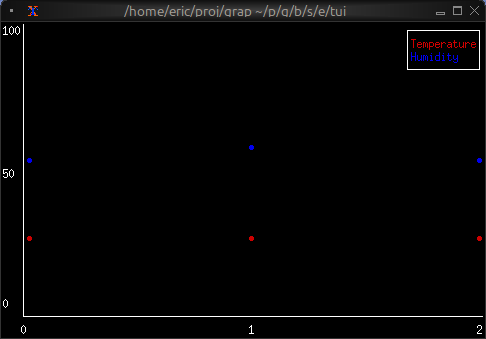
Marker Comparison
- Dot: Fastest, lowest resolution, good for dense data
- Braille: Smoothest curves, medium performance, best visual quality
- Block: High contrast, medium performance
See Also
- barchart - For categorical data visualization
- sparkline - For compact inline charts
- canvas - For custom graphics
The Text Widget
The text widget renders styled text in the terminal. It's a fundamental building block for displaying formatted content with colors, modifiers, and multiple lines. Text is built from Line objects, which are in turn composed of Span objects.
APIs
mod text: sig {
type Alignment = [`Left, `Center, `Right];
type Modifier = [
`Bold,
`Italic,
`Underlined,
`SlowBlink,
`RapidBlink,
`Reversed,
`Hidden,
`CrossedOut
];
type Color = [
`Red, `Green, `Yellow, `Blue, `Magenta, `Cyan, `Gray, `DarkGray,
`LightRed, `LightGreen, `LightYellow, `LightBlue, `LightMagenta, `LightCyan,
`White, `Black,
`Indexed(i64),
`Rgb({r: i64, g: i64, b: i64})
];
/// Creates styled text from a string or array of lines
val text: fn(&[string, Array<Line>]) -> Widget;
/// Creates a line of text from a string or array of spans
val line: fn(?#style: Style, ?#alignment: Alignment, [string, Array<Span>]) -> Line;
/// Creates a styled text span
val span: fn(?#style: Style, string) -> Span;
/// Creates a text style
val style: fn(?#fg: Color, ?#bg: Color, ?#add_modifier: Modifier) -> Style;
}
Text Hierarchy
- Span: A single segment of text with a single style
- Line: A collection of spans forming one line
- Text: A collection of lines forming multi-line content
Examples
Basic Usage
use tui;
use tui::text;
text(&"Hello, World!")

Status Messages
use tui;
use tui::text;
let make_status = |level, msg| select level {
`Error => line([
span(#style: style(#fg: `Red, #add_modifier: [`Bold]), "ERROR: "),
span(msg)
]),
`Warning => line([
span(#style: style(#fg: `Yellow, #add_modifier: [`Bold]), "WARNING: "),
span(msg)
]),
`Info => line([
span(#style: style(#fg: `Cyan), "INFO: "),
span(msg)
])
};
text(&[
make_status(`Info, "Application started"),
make_status(`Warning, "Cache miss"),
make_status(`Error, "Connection failed")
])
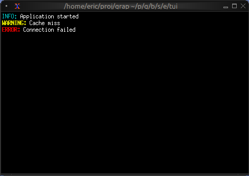
Dynamic Colors
use tui;
use tui::text;
let count = 0;
let timer = time::timer(duration:1.s, true);
count <- timer ~ (count + 1);
let colors = [`Red, `Green, `Yellow, `Blue, `Magenta, `Cyan];
let color = colors[count % array::len(colors)]$;
let l = line([
span(#style: style(#fg: `White), "Count: "),
span(#style: style(#fg: color, #add_modifier: [`Bold]), "[count]")
]);
text(&[l])
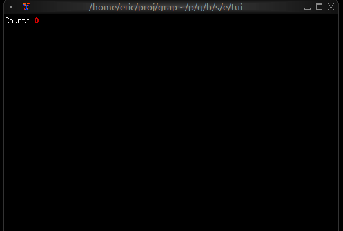
Alignment
use tui;
use tui::text;
text(&[
line(#alignment: `Left, "Left aligned"),
line(#alignment: `Center, "Centered"),
line(#alignment: `Right, "Right aligned")
])
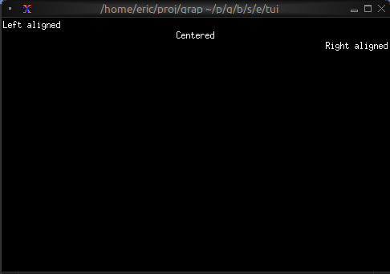
Color Support
- Named colors:
Red,Green,Blue,Yellow,Magenta,Cyan,White,Black,Gray,DarkGray, andLight*variants - Indexed colors:
Indexed(202)for 256-color palette - RGB colors:
Rgb({r: 255, g: 100, b: 50})for true color
Text Modifiers
Bold,Italic,Underlined,CrossedOutSlowBlink,RapidBlink(terminal support varies)Reversed,Hidden
See Also
- paragraph - For wrapped and scrollable text
- block - For containing text with borders
- list - For selectable text items
The Paragraph Widget
The paragraph widget displays multi-line text with automatic word wrapping and scrolling support. It's ideal for displaying long text content, logs, or any content that needs to flow across multiple lines.
API
mod paragraph: sig {
type ScrollPosition = {x: i64, y: i64};
/// Creates a paragraph widget with text content
val paragraph: fn(
?#scroll: &ScrollPosition,
?#alignment: &Alignment,
?#wrap: &bool,
&[string, Text]
) -> Widget;
}
Parameters
- scroll - Record with
xandyfields for scroll position - alignment -
Left,Center, orRight - wrap - Enable/disable word wrapping (default: true)
Examples
Basic Usage
use tui;
use tui::paragraph;
paragraph(&"This is a simple paragraph. It will automatically wrap to fit the available width.")

Scrollable Content
use tui;
use tui::paragraph;
use tui::block;
use tui::text;
use tui::input_handler;
let long_text = "I have got a lovely bunch of coconuts. Very long text continues here. More text. Even more text. This is a very long paragraph that will need scrolling to see all of it.";
let scroll_y = 0;
let handle_event = |e: Event| -> [`Stop, `Continue] select e {
`Key(k) => select k.kind {
`Press => select k.code {
k@`Up if scroll_y > 0 => {
scroll_y <- (k ~ scroll_y) - 1;
`Stop
},
k@`Down if scroll_y < 100 => {
scroll_y <- (k ~ scroll_y) + 1;
`Stop
},
_ => `Continue
},
_ => `Continue
},
_ => `Continue
};
input_handler(
#handle: &handle_event,
&block(
#border: &`All,
#title: &line("Scrollable Text"),
¶graph(
#scroll: &{x: 0, y: scroll_y},
&long_text
)
)
)

Live Log Viewer
Display real-time updating content:
use tui;
use tui::paragraph;
use tui::text;
let log_entries = [];
let new_entry = net::subscribe("/local/logs/application")?;
log_entries <- array::window(
#n: 100,
new_entry ~ log_entries,
line(cast<string>(new_entry)?)
);
paragraph(&log_entries)
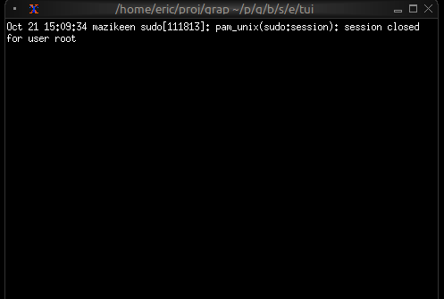
Centered Message
use tui;
use tui::paragraph;
use tui::text;
paragraph(
#alignment: &`Center,
&[
line(""),
line(#style: style(#fg: `Yellow, #add_modifier: [`Bold]), "Welcome"),
line(""),
line("Press any key to continue")
]
)

Word Wrapping
The paragraph widget automatically wraps long lines to fit the available width. Word boundaries are respected, so words won't be split in the middle unless they're longer than the available width.
See Also
- text - For creating styled text content
- scrollbar - For adding scrollbars
- block - For containing paragraphs with borders
- list - For line-by-line selectable content
The Gauge Widget
The gauge widget displays a single value as a filled progress indicator, perfect for showing percentages, completion status, or resource usage. It provides a clear visual representation of how full or complete something is.
API
mod gauge: sig {
/// Creates a gauge widget showing progress from 0.0 to 1.0
val gauge: fn(
?#gauge_style: &Style,
?#label: &Line,
?#use_unicode: &bool,
?#style: &Style,
&f64
) -> Widget;
}
Parameters
- gauge_style - Style for the filled portion
- label - Line or span displayed in the center
- use_unicode - Use Unicode block characters for smoother rendering
- style - Style for the unfilled portion
Examples
Basic Usage
use tui;
use tui::gauge;
let progress = 0.75; // 75%
gauge(
#gauge_style: &style(#fg: `Green),
&progress
)

Progress with Color Thresholds
use tui;
use tui::gauge;
use tui::block;
use tui::text;
let clock = time::timer(duration:0.5s, true);
let power = 0.0;
power <- min(1.0, (clock ~ power) + 0.01);
let color = select power {
x if x < 0.10 => `Red,
x if x < 0.25 => `Yellow,
x => `Green
};
let percentage = cast<i64>(power * 100.0)?;
block(
#border: &`All,
#title: &line("Power Level"),
&gauge(
#gauge_style: &style(#fg: color),
#label: &span("[percentage]%"),
&power
)
)
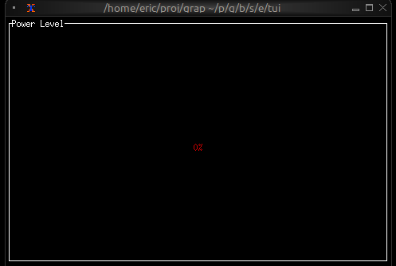
Resource Usage
use tui;
use tui::gauge;
use tui::text;
let used_memory = 6.5; // GB
let total_memory = 16.0; // GB
let usage_ratio = used_memory / total_memory;
let color = select usage_ratio {
x if x > 0.9 => `Red,
x if x > 0.7 => `Yellow,
_ => `Green
};
gauge(
#gauge_style: &style(#fg: color),
#label: &span("[used_memory] GB / [total_memory] GB"),
&usage_ratio
)
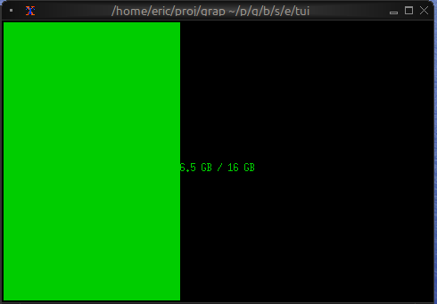
See Also
- linegauge - For horizontal line-based gauges
- sparkline - For historical trend display
- barchart - For comparing multiple values
The Line Gauge Widget
The line_gauge widget displays a horizontal progress indicator using line-drawing characters. It's more compact than gauge and ideal for dashboards where vertical space is limited.
API
mod linegauge: sig {
type LineSet = [`Thin, `Thick, `Double];
/// Creates a line gauge widget showing progress from 0.0 to 1.0
val line_gauge: fn(
?#filled_style: &Style,
?#unfilled_style: &Style,
?#line_set: &LineSet,
?#label: &Line,
?#style: &Style,
&f64
) -> Widget;
}
Parameters
- filled_style - Style for the filled portion
- unfilled_style - Style for the unfilled portion
- line_set - Character set:
Thin,Thick(default), orDouble - label - Line or span displayed within the gauge
- style - Base style for the widget
Examples
Basic Usage
use tui;
use tui::line_gauge;
let progress = 0.75; // 75%
line_gauge(
#filled_style: &style(#fg: `Green),
&progress
)

Color-coded Status
use tui;
use tui::line_gauge;
use tui::block;
use tui::text;
{
let clock = time::timer(duration:0.5s, true);
let power = 0.0;
power <- min(1.0, (clock ~ power) + 0.01);
let color = select power {
x if x < 0.10 => `Red,
x if x < 0.25 => `Yellow,
x => `Green
};
let percentage = cast<i64>(power * 100.0)?;
block(
#border: &`All,
#title: &line("Power"),
&line_gauge(
#filled_style: &style(#fg: color),
#line_set: &`Thick,
#label: &line("[percentage]%"),
&power
)
)
}
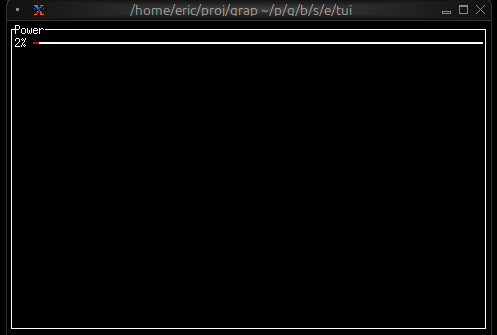
Compact Multi-metric Display
use tui;
use tui::line_gauge;
use tui::text;
use tui::layout;
layout(
#direction: &`Vertical,
&[
child(#constraint: `Percentage(5), line_gauge(
#line_set:&`Thick,
#filled_style: &style(#fg: `Red),
#label: &line("CPU 45%"),
&0.45
)),
child(#constraint: `Percentage(5), line_gauge(
#line_set:&`Thick,
#filled_style: &style(#fg: `Yellow),
#label: &line("MEM 67%"),
&0.67
)),
child(#constraint: `Percentage(5), line_gauge(
#line_set:&`Thick,
#filled_style: &style(#fg: `Green),
#label: &line("DSK 23%"),
&0.23
))
]
)
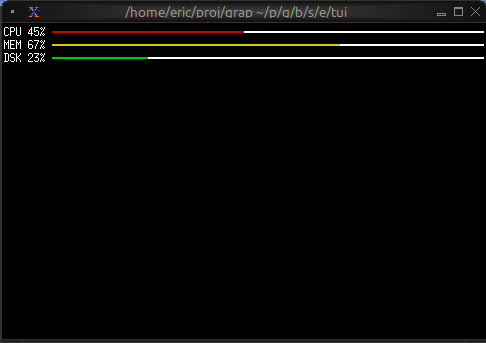
Use Cases
- System resource monitors (CPU, RAM, disk, network)
- Download/upload progress indicators
- Compact status dashboards
- Progress tracking in limited space
Comparison with gauge
Use line_gauge when:
- You need compact, single-line displays
- Vertical space is limited
- You want a more technical/modern look
Use gauge when:
- You have more vertical space available
- You want larger, more prominent indicators
See Also
- gauge - For block-style progress indicators
- sparkline - For historical trend display
- barchart - For categorical value comparison
input
The Layout Widget
The layout widget arranges child widgets in horizontal or vertical layouts with flexible sizing constraints. It's the primary tool for organizing complex TUI interfaces and supports focus management for interactive applications.
APIs
mod layout: sig {
type Direction = [`Horizontal, `Vertical];
type Flex = [`Start, `Center, `End, `SpaceAround, `SpaceBetween];
type Constraint = [
`Percentage(i64),
`Length(i64),
`Min(i64),
`Max(i64),
`Ratio(i64, i64),
`Fill(i64)
];
/// Creates a layout that arranges child widgets
val layout: fn(
?#direction: &Direction,
?#focused: &i64,
?#flex: &Flex,
&Array<Child>
) -> Widget;
/// Creates a child widget with sizing constraints
val child: fn(?#constraint: Constraint, Widget) -> Child;
}
Parameters
- direction -
HorizontalorVertical(default:Vertical) - focused - Index of the currently focused child (0-indexed)
- flex - Alignment when children don't fill space:
Start,Center,End,SpaceAround,SpaceBetween
Constraint Types
- Percentage(n) - Allocates n% of available space
- Length(n) - Fixed width/height in cells
- Min(n) - At least n cells
- Max(n) - At most n cells
- Ratio(num, den) - Fractional allocation (num/den)
- Fill(n) - Takes remaining space after other constraints
Examples
Basic Layout
use tui;
use tui::layout;
use tui::block;
use tui::text;
let content1 = text(&"Sidebar content");
let content2 = text(&"Main content");
let sidebar = block(#border: &`All, #title: &line("Sidebar"), &content1);
let main = block(#border: &`All, #title: &line("Main"), &content2);
layout(
#direction: &`Horizontal,
&[
child(#constraint: `Percentage(30), sidebar),
child(#constraint: `Percentage(70), main)
]
)

Three-Pane Layout with Focus
use tui;
use tui::layout;
use tui::text;
use tui::input_handler;
use tui::block;
let focused = 0;
let handle_event = |e: Event| -> [`Stop, `Continue] select e {
`Key(k) => select k.kind {
`Press => select k.code {
k@`Tab => {
focused <- ((k ~ focused) + 1) % 3;
`Stop
},
_ => `Continue
},
_ => `Continue
},
_ => `Continue
};
let focused_border = |i| select focused { n if n == i => `All, _ => [`Top] };
let left_pane = block(#border:&focused_border(0), &text(&"Left"));
let center_pane = block(#border:&focused_border(1), &text(&"Center"));
let right_pane = block(#border:&focused_border(2), &text(&"Right"));
input_handler(
#handle: &handle_event,
&layout(
#direction: &`Horizontal,
#focused: &focused,
&[
child(#constraint: `Percentage(25), left_pane),
child(#constraint: `Percentage(50), center_pane),
child(#constraint: `Percentage(25), right_pane)
]
)
)
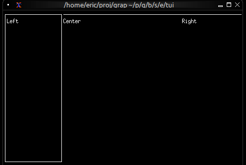
Nested Layouts
use tui;
use tui::layout;
use tui::text;
use tui::block;
let widget1 = block(#border:&`All, &text(&"Widget 1"));
let widget2 = block(#border:&`All, &text(&"Widget 2"));
let bottom_widget = block(#border:&`All, &text(&"Bottom"));
let top_row = layout(
#direction: &`Horizontal,
&[
child(#constraint: `Percentage(50), widget1),
child(#constraint: `Percentage(50), widget2)
]
);
layout(
#direction: &`Vertical,
&[
child(#constraint: `Percentage(50), top_row),
child(#constraint: `Percentage(50), bottom_widget)
]
)
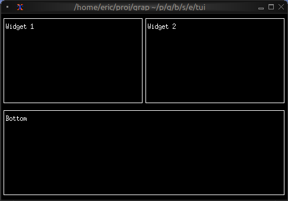
Header/Content/Footer
use tui;
use tui::layout;
use tui::text;
use tui::block;
let header = block(#border:&`All, &text(&"Header"));
let content = block(#border:&`All, &text(&"Main Content"));
let footer = block(#border:&`All, &text(&"Footer"));
layout(
#direction: &`Vertical,
&[
child(#constraint: `Percentage(20), header),
child(#constraint: `Fill(1), content),
child(#constraint: `Percentage(20), footer)
]
)

See Also
- block - Common child widget for layouts
- input_handler - For handling focus changes
The List Widget
The list widget displays a scrollable, selectable list of items with keyboard navigation support. It's perfect for menus, file browsers, option selectors, and any interface that requires choosing from a list of items.
API
mod list: sig {
/// Creates a list widget from an array of lines
val list: fn(
?#selected: &i64,
?#scroll: &i64,
?#highlight_style: &Style,
?#highlight_symbol: &string,
?#repeat_highlight_symbol: &bool,
?#style: &Style,
&Array<Line>
) -> Widget;
}
Parameters
- selected - Index of the currently selected item (0-indexed)
- scroll - Scroll position (offset from the top)
- highlight_style - Style for the selected item
- highlight_symbol - String displayed before selected item (e.g., "▶ ")
- repeat_highlight_symbol - Whether to repeat symbol on wrapped lines
- style - Base style for all list items
Examples
Basic Usage
use tui;
use tui::list;
let items = [
line("Apple"),
line("Banana"),
line("Cherry")
];
list(
#selected: &0,
&items
)
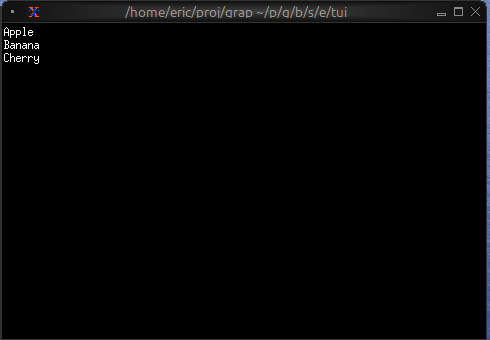
Interactive List with Navigation
use tui;
use tui::list;
use tui::block;
use tui::text;
use tui::input_handler;
let items = [
line("Apple"), line("Banana"), line("Cherry"),
line("Date"), line("Elderberry"), line("Fig"), line("Grape")
];
let last = array::len(items) - 1;
let selected = 0;
let scroll_pos = 0;
let visible = 5;
// Auto-scroll to keep selection visible
scroll_pos <- select selected {
s if s < scroll_pos => s,
s if s > (scroll_pos + visible - 1) => s - visible + 1,
_ => never()
};
let handle_event = |e: Event| -> [`Stop, `Continue] select e {
`Key(k) => select k.kind {
`Press => select k.code {
k@`Up if selected > 0 => {
selected <- (k ~ selected) - 1;
`Stop
},
k@`Down if selected < last => {
selected <- (k ~ selected) + 1;
`Stop
},
k@`Home => { selected <- k ~ 0; `Stop },
k@`End => { selected <- k ~ last; `Stop },
_ => `Continue
},
_ => `Continue
},
_ => `Continue
};
input_handler(
#handle: &handle_event,
&block(
#border: &`All,
#title: &line("Fruit Selection"),
&list(
#highlight_style: &style(#fg: `Black, #bg: `Yellow),
#highlight_symbol: &"▶ ",
#selected: &selected,
#scroll: &scroll_pos,
&items
)
)
)

Styled Items
use tui;
use tui::list;
use tui::text;
let make_item = |text, priority| select priority {
`High => line(#style: style(#fg: `Red, #add_modifier: [`Bold]), text),
`Medium => line(#style: style(#fg: `Yellow), text),
`Low => line(#style: style(#fg: `White), text)
};
let items = [
make_item("Critical bug", `High),
make_item("Feature request", `Medium),
make_item("Documentation", `Low)
];
list(#selected: &0, &items)
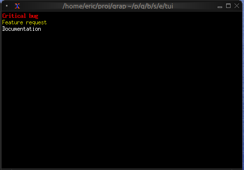
See Also
- table - For multi-column structured data
- scrollbar - For adding scrollbars
- block - For containing lists with borders
- tabs - For switching between different lists
The Scrollbar Widget
The scrollbar widget adds a visual scrollbar indicator to scrollable content, making it clear when content extends beyond the visible area and showing the current scroll position.
API
mod scrollbar: sig {
/// Wraps a widget with a scrollbar indicator
val scrollbar: fn(
#position: &i64,
?#content_length: &i64,
?#size: &Size,
&Widget
) -> Widget;
}
Parameters
- position (required) - Current scroll position (typically the Y offset)
- content_length - Total length of the content (auto-detected if not specified)
- size (output) - Rendered size of the scrollbar area
Examples
Basic Usage
use tui;
use tui::scrollbar;
use tui::paragraph;
let long_text = "This is a very long text that needs scrolling. More content here. Even more content. And even more. Keep going with lots of text to demonstrate scrolling.";
let position = 0;
let content = paragraph(
#scroll: &{x: 0, y: position},
&long_text
);
scrollbar(
#position: &position,
&content
)
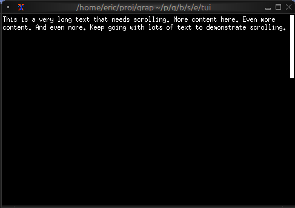
Scrollable Paragraph
use tui;
use tui::scrollbar;
use tui::paragraph;
use tui::block;
use tui::text;
use tui::input_handler;
let long_text = "Very long text content...";
let position = 0;
let max_position = 100;
let handle_event = |e: Event| -> [`Stop, `Continue] select e {
`Key(k) => select k.kind {
`Press => select k.code {
k@`Up if position > 0 => {
position <- (k ~ position) - 1;
`Stop
},
k@`Down if position < max_position => {
position <- (k ~ position) + 1;
`Stop
},
k@`PageUp if position > 10 => {
position <- (k ~ position) - 10;
`Stop
},
k@`PageDown if position < (max_position - 10) => {
position <- (k ~ position) + 10;
`Stop
},
k@`Home => { position <- k ~ 0; `Stop },
k@`End => { position <- k ~ max_position; `Stop },
_ => `Continue
},
_ => `Continue
},
_ => `Continue
};
input_handler(
#handle: &handle_event,
&block(
#border: &`All,
#title: &line("Scrollable Content"),
&scrollbar(
#position: &position,
#content_length: &max_position,
¶graph(#scroll: &{x: 0, y: position}, &long_text)
)
)
)
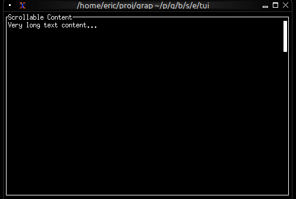
Scrollable List
use tui;
use tui::scrollbar;
use tui::list;
use tui::text;
let items = [
line("Item 1"),
line("Item 2"),
line("Item 3"),
line("Item 4"),
line("Item 5")
];
let selected = 0;
let scroll_pos = 0;
let visible = 10;
// Auto-scroll to keep selection visible
scroll_pos <- select selected {
s if s < scroll_pos => s,
s if s >= (scroll_pos + visible) => s - visible + 1,
_ => never()
};
scrollbar(
#position: &scroll_pos,
&list(
#scroll: &scroll_pos,
#selected: &selected,
&items
)
)

See Also
- paragraph - For scrollable text content
- list - For scrollable lists
- table - For scrollable tables
- block - For containing scrollable content
The Sparkline Widget
The sparkline widget renders compact inline charts perfect for dashboards and status displays. It shows data trends in minimal space, with support for color-coded bars based on thresholds.
APIs
mod sparkline: sig {
type Direction = [`LeftToRight, `RightToLeft];
/// Creates a sparkline widget from data values
val sparkline: fn(
?#max: &i64,
?#style: &Style,
?#direction: &Direction,
&Array<[SparklineBar, f64]>
) -> Widget;
/// Creates a sparkline bar with custom styling
val sparkline_bar: fn(?#style: Style, f64) -> SparklineBar;
}
Parameters
sparkline
- max - Maximum value for scaling (auto-scales if not specified)
- style - Default style for bars
- direction -
LeftToRight(default) orRightToLeft
sparkline_bar
- style - Style for this specific bar
Examples
Basic Usage
use tui;
use tui::sparkline;
let data = [10.0, 25.0, 40.0, 55.0, 70.0, 85.0, 100.0];
sparkline(#max: &100, &data)
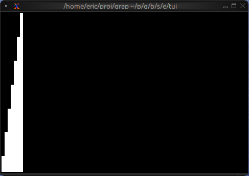
Threshold-based Coloring
use tui;
use tui::sparkline;
use tui::block;
use tui::text;
let data = {
let clock = time::timer(duration:0.3s, true);
let v = rand::rand(#clock, #start:0., #end:100.);
let d = [];
let color = select v {
v if v <= 25. => `Green,
v if v <= 50. => `Yellow,
_ => `Red
};
let v = sparkline_bar(#style: style(#fg: color), v);
d <- array::window(#n:80, clock ~ d, v);
d
};
block(
#border: &`All,
#title: &line("Network Traffic Rate"),
&sparkline(
#style: &style(#fg: `Green),
#max: &100,
&data
)
)

Multi-metric Dashboard
use tui;
use tui::sparkline;
use tui::block;
use tui::text;
use tui::layout;
let cpu_data = [50., 60., 55., 70., 65.];
let mem_data = [30., 35., 40., 38., 42.];
let net_data = [10., 20., 15., 25., 30.];
layout(
#direction: &`Vertical,
&[
child(#constraint: `Percentage(33), block(
#title: &line("CPU"),
&sparkline(#style: &style(#fg: `Red), #max: &100, &cpu_data)
)),
child(#constraint: `Percentage(33), block(
#title: &line("Memory"),
&sparkline(#style: &style(#fg: `Yellow), #max: &100, &mem_data)
)),
child(#constraint: `Percentage(33), block(
#title: &line("Network"),
&sparkline(#style: &style(#fg: `Cyan), &net_data)
))
]
)

Sparkline from Netidx
use tui;
use tui::sparkline;
let data: Array<f64> = [];
let new_value = net::subscribe("/local/metrics/cpu")?;
data <- array::window(
#n: 60,
new_value ~ data,
cast<f64>(new_value)?
);
sparkline(#max: &100, &data)
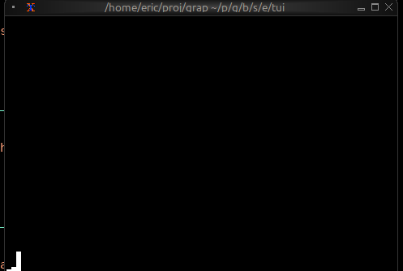
showing the output of the below shell pipeline during a netidx build,
top | \
grep --line-buffered Cpu | \
awk '{ printf("/local/metrics/cpu|f64|%s\n", $6); fflush() }' | \
netidx publisher
Use Cases
Sparklines are ideal for:
- System resource monitoring (CPU, memory, network)
- Real-time metrics dashboards
- Compact data visualization in lists or tables
- Rate of change visualization
See Also
- chart - For detailed charts with axes
- gauge - For single current value display
- linegauge - For horizontal progress bars
The Table Widget
The table widget displays structured data in rows and columns with support for selection, scrolling, and custom styling. It's ideal for data grids, process monitors, file listings, and any tabular data display.
APIs
mod table: sig {
type HighlightSpacing = [`Always, `WhenSelected, `Never];
/// Creates a table widget from an array of row references
val table: fn(
?#header: &Row,
?#selected: &i64,
?#row_highlight_style: &Style,
?#highlight_symbol: &string,
?#highlight_spacing: &HighlightSpacing,
?#widths: &Array<Constraint>,
?#column_spacing: &i64,
?#style: &Style,
&Array<&Row>
) -> Widget;
/// Creates a table row from cells
val row: fn(?#style: Style, Array<Cell>) -> Row;
/// Creates a table cell from a line
val cell: fn(?#style: Style, Line) -> Cell;
}
Parameters
- header - Row object for the table header
- selected - Index of the currently selected row
- row_highlight_style - Style for the selected row
- highlight_symbol - String before selected row
- highlight_spacing - When to show highlight symbol:
Always,WhenSelected,Never - widths - Array of column width constraints
- column_spacing - Number of spaces between columns
- style - Base style for the table
Examples
Basic Usage
use tui;
use tui::table;
let header = row([
cell(line("Name")),
cell(line("Age")),
cell(line("City"))
]);
let row1 = row([
cell(line("Alice")),
cell(line("28")),
cell(line("New York"))
]);
let row2 = row([
cell(line("Bob")),
cell(line("32")),
cell(line("San Francisco"))
]);
table(
#header: &header,
#selected: &0,
&[&row1, &row2]
)
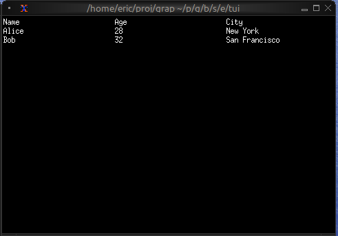
Interactive Table
use tui;
use tui::table;
use tui::block;
use tui::text;
use tui::input_handler;
type User = {name: string, age: i64, city: string};
let users: Array<User> = [
{name: "Alice", age: 28, city: "New York"},
{name: "Bob", age: 32, city: "San Francisco"},
{name: "Charlie", age: 25, city: "Chicago"}
];
let header = row(
#style: style(#fg: `Yellow, #add_modifier: [`Bold]),
[cell(line("Name")), cell(line("Age")), cell(line("City"))]
);
let row1 = row([
cell(line("Alice")),
cell(line("28")),
cell(line("New York"))
]);
let row2 = row([
cell(line("Bob")),
cell(line("32")),
cell(line("San Francisco"))
]);
let row3 = row([
cell(line("Charlie")),
cell(line("25")),
cell(line("Chicago"))
]);
let rows = [&row1, &row2, &row3];
let selected = 0;
let handle_event = |e: Event| -> [`Stop, `Continue] select e {
`Key(k) => select k.kind {
`Press => select k.code {
k@`Up if selected > 0 => {
selected <- (k ~ selected) - 1;
`Stop
},
k@`Down if selected < 2 => {
selected <- (k ~ selected) + 1;
`Stop
},
_ => `Continue
},
_ => `Continue
},
_ => `Continue
};
input_handler(
#handle: &handle_event,
&block(
#border: &`All,
#title: &line("User Directory"),
&table(
#header: &header,
#row_highlight_style: &style(#bg: `Yellow, #fg: `Black),
#selected: &selected,
#column_spacing: &2,
#widths: &[`Percentage(30), `Percentage(20), `Percentage(50)],
&rows
)
)
)
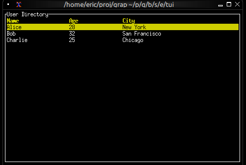
Conditional Cell Styling
use tui;
use tui::table;
use tui::text;
let make_cpu_cell = |cpu| {
let s = select cpu {
c if c > 80 => style(#fg: `Red),
c if c > 50 => style(#fg: `Yellow),
_ => style(#fg: `Green)
};
cell(#style: s, line("[cpu]%"))
};
let row1 = row([
cell(line("process-1")),
make_cpu_cell(85) // Red
]);
let row2 = row([
cell(line("process-2")),
make_cpu_cell(60) // Yellow
]);
let row3 = row([
cell(line("process-3")),
make_cpu_cell(30) // Green
]);
let header = row([
cell(#style: style(#add_modifier: [`Bold]), line("Process")),
cell(#style: style(#add_modifier: [`Bold]), line("CPU"))
]);
table(
#header: &header,
#widths: &[`Percentage(60), `Percentage(40)],
&[&row1, &row2, &row3]
)

Real-time Updates
use tui;
use tui::table;
use tui::text;
let clock = time::timer(duration:1.s, true);
let cpu_val = 5;
cpu_val <- {
let v = clock ~ cpu_val;
v + rand::rand(#clock, #start: -5, #end: 5)
};
let row1 = row([
cell(line("1")),
cell(line("init")),
cell(line("[cpu_val]%"))
]);
let row2 = row([
cell(line("2")),
cell(line("kthreadd")),
cell(line("0%"))
]);
let rows = [&row1, &row2];
let header = row([cell(line("PID")), cell(line("Name")), cell(line("CPU"))]);
table(#header: &header, &rows)

See Also
- list - For simpler single-column selection
- scrollbar - For adding scrollbars
- block - For containing tables with borders
The Tabs Widget
The tabs widget creates a tabbed interface for organizing content into multiple switchable panels. Each tab has a title displayed in the tab bar and associated content that's shown when the tab is selected.
API
mod tabs: sig {
/// Creates a tabbed interface from an array of (title, content) tuples
val tabs: fn(
?#selected: &i64,
?#highlight_style: &Style,
?#style: &Style,
?#divider: &[string, Span],
&Array<(Line, Widget)>
) -> Widget;
}
Parameters
- selected - Index of the currently selected tab (0-indexed)
- highlight_style - Style for the selected tab title
- style - Base style for unselected tab titles
- divider - String or span separating tab titles
Examples
Basic Usage
use tui;
use tui::tabs;
use tui::paragraph;
let tab1 = paragraph(&"This is tab 1");
let tab2 = paragraph(&"This is tab 2");
let tab3 = paragraph(&"This is tab 3");
tabs(
#selected: &0,
&[
(line("One"), tab1),
(line("Two"), tab2),
(line("Three"), tab3)
]
)
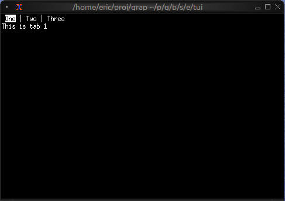
Navigation Between Tabs
use tui;
use tui::tabs;
use tui::block;
use tui::text;
use tui::input_handler;
let selected_tab = 0;
let handle_event = |e: Event| -> [`Stop, `Continue] select e {
`Key(k) => select k.kind {
`Press => select k.code {
k@`Left if selected_tab > 0 => {
selected_tab <- (k ~ selected_tab) - 1;
`Stop
},
k@`Right if selected_tab < 2 => {
selected_tab <- (k ~ selected_tab) + 1;
`Stop
},
k@`Tab => {
selected_tab <- ((k ~ selected_tab) + 1) % 3;
`Stop
},
_ => `Continue
},
_ => `Continue
},
_ => `Continue
};
let overview = text(&"Overview");
let items = text(&"Items");
let settings = text(&"Settings");
input_handler(
#handle: &handle_event,
&block(
#border: &`All,
#title: &line("Application (←/→ to navigate)"),
&tabs(
#highlight_style: &style(#fg: `Yellow, #add_modifier: [`Bold]),
#style: &style(#fg: `Gray),
#selected: &selected_tab,
&[
(line("Overview"), overview),
(line("Items"), items),
(line("Settings"), settings)
]
)
)
)

Styled Tab Titles
use tui;
use tui::tabs;
use tui::text;
let completed_content = text(&"Completed");
let progress_content = text(&"In Progress");
let failed_content = text(&"Failed");
let tab_list = [
(line([
span(#style: style(#fg: `Green), "✓ "),
span("Completed")
]), completed_content),
(line([
span(#style: style(#fg: `Yellow), "⚠ "),
span("In Progress")
]), progress_content),
(line([
span(#style: style(#fg: `Red), "✗ "),
span("Failed")
]), failed_content)
];
tabs(&tab_list)

Tab with Badge
use tui;
use tui::tabs;
use tui::text;
let unread_count = 5;
let messages_tab = line([
span("Messages"),
span(#style: style(#fg: `Red, #add_modifier: [`Bold]), " ([unread_count])")
]);
let home_content = text(&"Home");
let messages_content = text(&"Messages");
let settings_content = text(&"Settings");
tabs(&[
(line("Home"), home_content),
(messages_tab, messages_content),
(line("Settings"), settings_content)
])
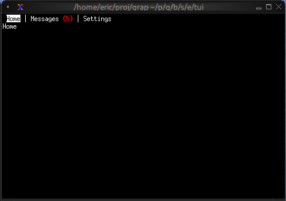
Keyboard Navigation
Common patterns:
Left/Right- Switch to previous/next tabTab- Cycle forward through tabs- Number keys - Jump directly to tab
See Also
- block - For containing tabs with borders
- list - Common content for tabs
- table - For tabular content in tabs
Embedding and Extending Graphix
There are multiple ways you can embed Graphix in your application and extend it with rust code.
Writing built-in functions in rust
You can implement Graphix functions in rust. Most of the standard library is actually written in rust (to improve startup time), and you can easily add more built-ins using rust code for computationally heavy tasks, or IO.
There are two different ways to write built-ins, for a simple pure
function you can use a the CachedArgs interface which takes care of
most of the details for you. You only need to implement one method to
evaluate changes to your arguments. For example min finds the minimum
value of all it's arguments,
#![allow(unused)] fn main() { use graphix_stdlib::{deftype, CachedArgs, EvalCached}; use anyhow::{bail, Result}; use arcstr::{literal, ArcStr}; use netidx::subscriber::Value; #[derive(Debug, Default)] struct MinEv; impl EvalCached for MinEv { const NAME: &str = "min"; deftype!("core", "fn('a, @args:'a) -> 'a"); fn eval(&mut self, from: &CachedVals) -> Option<Value> { let mut res = None; for v in from.flat_iter() { match (res, v) { (None, None) | (Some(_), None) => return None, (None, Some(v)) => { res = Some(v); } (Some(v0), Some(v)) => { res = if v < v0 { Some(v) } else { Some(v0) }; } } } res } } type Min = CachedArgs<MinEv>; }
Then you must register this built-in with the exec context,
#![allow(unused)] fn main() { ctx.register_builtin::<Min>()? }
And then you can call it from Graphix,
let min = |@args| 'min
The special form function body 'min references a built-in rust
function.
See Writing Built in Functions for details.
Building Stand Alone Graphix Applications
You can build single binary stand alone Graphix applications using the
graphix-shell crate. All your Graphix source code, and built-ins are
compiled together with the compiler and runtime into a single binary
that you can then deploy and run. When combined with writing built-ins
in rust this becomes a powerful mixed language toolset.
For example here is the netidx browser from netidx-tools:
#![allow(unused)] fn main() { use crate::publisher; use anyhow::{Context, Result}; use arcstr::literal; use graphix_rt::NoExt; use graphix_shell::{Mode, ShellBuilder}; use netidx::{ config::Config, publisher::{DesiredAuth, PublisherBuilder}, subscriber::Subscriber, }; pub async fn run( cfg: Config, auth: DesiredAuth, params: publisher::Params, ) -> Result<()> { let publisher = PublisherBuilder::new(cfg.clone()) .desired_auth(auth.clone()) .bind_cfg(params.bind) .build() .await .context("creating publisher")?; let subscriber = Subscriber::new(cfg, auth).context("create subscriber")?; ShellBuilder::<NoExt>::default() .mode(Mode::Static(literal!(include_str!("browser.gx")))) .publisher(publisher) .subscriber(subscriber) .no_init(true) .build()? .run() .await } }
See Stand Alone Graphix Applications for details
Embedding Graphix in Your Application
Using the graphix-rt crate you can embed the Graphix compiler and
runtime in your application. Then you can,
- compile and run Graphix code
- receive events from Graphix expressions
- inject events into Graphix pipelines
- call Graphix functions
The runtime uses tokio and runs in a background task so it integrates well into a normal async workflow.
See Using Graphix as Embedded Scripting for details
Writing Built in Functions
As mentioned in the introduction you can extend Graphix by writing built in functions in rust. This chapter will deep dive into the full API, if you just want to write a pure function see the Overview.
In order to implement a built-in graphix function you must implement
two traits,
graphix_compiler::BuiltIn
and
graphix_compiler::Apply. See
the rustdoc for details. These two traits give you more control than the
graphix_stdlib::CachedArgs method we covered in the overview. Lets look at the simplest possible example,
Understanding The Once Function
The once function evaluates it's arugment every cycle and passes
through one and only one update. The update method is the most
important method of Apply, it is called every cycle and returns
something only when the node being updated has "updated". The meaning
of that is specific to what the node does, but in the case of once
it means that the argument to once updated, and once has not
already seen an update. Consider the example program,
let clock = time::timer(1, true);
println(once(clock))
We expect this example to print the datetime exactly one time. Lets
dig in to how that actually works. The clock created by time::timer
will tick once per second forever. The time::timer built-in will
call set_timer in the
Rt,
which is part of the
ExecCtx. This
will schedule a cycle to happen 1 second from now, and will also
register that this toplevel node (let clock = ...) depends on the
timer event. When the timer event happens the approximate sequence of
events is,
- let clock = time::timer(1, true), update called on toplevel node (Bind)
- time::timer(1, true), bind calls update on it's rhs
- time::timer checks events to see if it should update, returns Some(DateTime(..))
- bind sets the id of clock in events to Value::DateTime(..)
- Rt checks for nodes that depend on
clockschedules println(..)
- println(once(clock)), update called on toplevel node (CallSite)
- once(clock), println calls update on it's argument, once(clock)
- once::update calls update on clock
- ref clock checks events to see if it updated, returns Some(Value::DateTime(..))
- once::update checks if it's the first time it's argument has updated, it is
- once::update returns Some(Value::DateTime(..))
- println prints the datetime
Implementing Once
#![allow(unused)] fn main() { #[derive(Debug)] struct Once { val: bool, } impl<R: Rt, E: UserEvent> BuiltIn<R, E> for Once { const NAME: &str = "once"; deftype!("core", "fn('a) -> 'a"); fn init(_: &mut ExecCtx<R, E>) -> BuiltInInitFn<R, E> { Arc::new(|_, _, _, _, _| Ok(Box::new(Once { val: false }))) } } impl<R: Rt, E: UserEvent> Apply<R, E> for Once { fn update( &mut self, ctx: &mut ExecCtx<R, E>, from: &mut [Node<R, E>], event: &mut Event<E>, ) -> Option<Value> { match from { [s] => s.update(ctx, event).and_then(|v| { if self.val { None } else { self.val = true; Some(v) } }), _ => None, } } fn sleep(&mut self, _ctx: &mut ExecCtx<R, E>) { self.val = false } } }
The BuiltIn trait is for construction, it declares the built in's name, and it's type (which we get to write out in syntax due to the deftype macro). It's init method is called every time the built in needs to be registered with a new context, and returns a closure that allocates the initial state of the function given a bunch of information about the context it's called in. In this case we don't care about any of that information, but it will be useful later.
The most important method of Apply is update. sleep is expected to
reset all the internal state and unregister anything registered with
the context.
Higher Order Functions
Right, now that the easy stuff is out of the way, lets see how we can
implement a built-in that takes another Graphix function as an
argument. This gets compiler guts all over the place, sorry about
that. Again lets look at the simplest example from the standard
library, which is array::group.
#![allow(unused)] fn main() { #[derive(Debug)] pub(super) struct Group<R: Rt, E: UserEvent> { queue: VecDeque<Value>, buf: SmallVec<[Value; 16]>, pred: Node<R, E>, ready: bool, pid: BindId, nid: BindId, xid: BindId, } impl<R: Rt, E: UserEvent> BuiltIn<R, E> for Group<R, E> { const NAME: &str = "array_group"; deftype!( "core::array", "fn('a, fn(i64, 'a) -> bool throws 'e) -> Array<'a> throws 'e" ); fn init(_: &mut ExecCtx<R, E>) -> BuiltInInitFn<R, E> { Arc::new(|ctx, typ, scope, from, top_id| match from { [_, _] => { let scope = scope.append(&format_compact!("fn{}", LambdaId::new().inner())); let n_typ = Type::Primitive(Typ::I64.into()); let etyp = typ.args[0].typ.clone(); let mftyp = match &typ.args[1].typ { Type::Fn(ft) => ft.clone(), t => bail!("expected function not {t}"), }; let (nid, n) = genn::bind(ctx, &scope.lexical, "n", n_typ.clone(), top_id); let (xid, x) = genn::bind(ctx, &scope.lexical, "x", etyp.clone(), top_id); let pid = BindId::new(); let fnode = genn::reference(ctx, pid, Type::Fn(mftyp.clone()), top_id); let pred = genn::apply(fnode, scope, vec![n, x], &mftyp, top_id); Ok(Box::new(Self { queue: VecDeque::new(), buf: smallvec![], pred, ready: true, pid, nid, xid, })) } _ => bail!("expected two arguments"), }) } } impl<R: Rt, E: UserEvent> Apply<R, E> for Group<R, E> { fn update( &mut self, ctx: &mut ExecCtx<R, E>, from: &mut [Node<R, E>], event: &mut Event<E>, ) -> Option<Value> { macro_rules! set { ($v:expr) => {{ self.ready = false; self.buf.push($v.clone()); let len = Value::I64(self.buf.len() as i64); ctx.cached.insert(self.nid, len.clone()); event.variables.insert(self.nid, len); ctx.cached.insert(self.xid, $v.clone()); event.variables.insert(self.xid, $v); }}; } if let Some(v) = from[0].update(ctx, event) { self.queue.push_back(v); } if let Some(v) = from[1].update(ctx, event) { ctx.cached.insert(self.pid, v.clone()); event.variables.insert(self.pid, v); } if self.ready && self.queue.len() > 0 { let v = self.queue.pop_front().unwrap(); set!(v); } loop { match self.pred.update(ctx, event) { None => break None, Some(v) => { self.ready = true; match v { Value::Bool(true) => { break Some(Value::Array(ValArray::from_iter_exact( self.buf.drain(..), ))) } _ => match self.queue.pop_front() { None => break None, Some(v) => set!(v), }, } } } } } fn typecheck( &mut self, ctx: &mut ExecCtx<R, E>, _from: &mut [Node<R, E>], ) -> anyhow::Result<()> { self.pred.typecheck(ctx) } fn refs(&self, refs: &mut Refs) { self.pred.refs(refs) } fn delete(&mut self, ctx: &mut ExecCtx<R, E>) { ctx.cached.remove(&self.nid); ctx.cached.remove(&self.pid); ctx.cached.remove(&self.xid); self.pred.delete(ctx); } fn sleep(&mut self, ctx: &mut ExecCtx<R, E>) { self.pred.sleep(ctx); } } }
This implements array::group, which given an argument, stores that
argument's updates internally, and creates an array out of them when
the predicate returns true. It's type is
fn('a, fn(i64, 'a) -> bool) -> Array<'a>
For example,
let n = seq(0, 100);
array::group(n, |_, n| (n == 50) || (n == 99))
seq(0, 100) updates 100 times from 0 to 99. The array::group will
create two arrays, one containing [0, .. 50] and the other
containing [51, .. 99]
The implementation needs to build a Node representing the
predicate. Node is the fundamental type of everything in the graph,
ultimately the entire program compiles to a node. The kind of node we
need to create here is a function call site, that will handle all the
details of late binding optional arguments, default args, etc,
etc. The genn module is specifically for generating nodes.
Typecheck
Because we generated code, we have to hook into the typecheck
compiler phase and make sure the type checker runs on it. This
requires that we implement the typecheck method. In our case all we
have to do is typecheck our generated call site. You can do powerful
things with this hook however.
BindIds and Refs
BindId is a very fundamental type in compiler guts. The
Event
struct contains two tables indexed by it. The most important is
variables. Every bound variable has a BindId. If a variable has
updated this cycle, then it's updated value will be in the variables
table indexed by it's BindId. In order to call this predicate
function we actually create three different variables and store their
BindIds as xid, nid, and pid. gen::ref returns a reference
Node and the BindId of the variable it is referencing. Since those
ref nodes become the arguments to the predicate call site we create,
xid and nid allow us to control the arguments passed into the
function. We just have to set xid and nid in Event::variables
before we update the predicate in order to call the function. This
may cause it to update immediatly, or, it may depend on something else
that needs to update before it will update. Either way, once we've set
xid and nid once and called update on the predicate we've done our
duty (it may never update, and that's ok). That just leaves pid,
what is it for? Well, earlier it was mentioned that functions are
always late bound. This is how that works. The lambda argument we were
passed from[1], whatever kind of node it is, will ultimately update
and return a LambdaId, which is an index into a table in the context
where all compiled functions actually reside. So every cycle we need
to call update on this node just like any other node, because the
LambdaId of the function we are supposed to be calling might change,
and if that happens the call site we created with genn::apply needs
to know about it. Luckily we don't have to handle any of the wonderful
details of late binding beyond this simple passing through of updates,
the call site will take care of that.
ExecCtx::cached, refs, delete
What is all this ctx.cached stuff. Well, when call sites get
initialized for the first time, or when an branch of select wakes from
sleep, it turns out we need to know what the current value of every
variable they depend on is. Which means we need to cache globally the
current value of every variable. So if you're setting variables, 90%
chance you need to update cached.
And this also explains another function that you have to implement when you're generating nodes, which is refs. Turns out we need to know all the variables a node depends on, so we can, you know, set them when it's being woken up from sleep, or stood up at a call site for the first time.
That just leaves delete. Turns out the structure of the graph
changes at run time, and we need to keep everything straight. It would
be nice if we could do this with Drop, but that would require
holding a reference to the ExecCtx we are in at every Node. I'd
really rather not pay to wrap every access to the context in a mutex,
so we're doing it the hard way (for now).
Dynamic Linking and Non Rust Builtins
At the moment there is no dynamic linking of rust built-ins, nor is there explicit support for writing built-ins in a language other than rust. However both of those goals are on the roadmap.
Essentially the plan is to export a minimal C abi interface for adding built-ins to Graphix, and then any language that can target that abi can be used directly to write Graphix built-ins, and we can dynamically load built-ins from shared libraries.
Stand Alone Graphix Applications
As we saw in the overview, using the graphix-shell crate you can build a stand alone Graphix application using rust. With those basics out of the way, in this section we'll see,
- linking multiple Graphix files into a module tree
- integrating rust built-ins
- building a custom repl with rust built-ins added
Module Trees, VFS resolver
In order to split a stand alone Graphix application up into mutiple files and
modules and link it all into a single rust binary you can use a kind of module
resolver called the VFS. This is pretty much exactly what it sounds like. Here
is an example from the TUI library that is built into the shell by default.
#![allow(unused)] fn main() { fn tui_mods() -> ModuleResolver { ModuleResolver::VFS(HashMap::from_iter([ (Path::from("/tui"), literal!(include_str!("tui/mod.gx"))), (Path::from("/tui/input_handler"), literal!(include_str!("tui/input_handler.gx"))), (Path::from("/tui/text"), literal!(include_str!("tui/text.gx"))), (Path::from("/tui/paragraph"), literal!(include_str!("tui/paragraph.gx"))), (Path::from("/tui/block"), literal!(include_str!("tui/block.gx"))), (Path::from("/tui/scrollbar"), literal!(include_str!("tui/scrollbar.gx"))), (Path::from("/tui/layout"), literal!(include_str!("tui/layout.gx"))), (Path::from("/tui/tabs"), literal!(include_str!("tui/tabs.gx"))), (Path::from("/tui/barchart"), literal!(include_str!("tui/barchart.gx"))), (Path::from("/tui/chart"), literal!(include_str!("tui/chart.gx"))), (Path::from("/tui/sparkline"), literal!(include_str!("tui/sparkline.gx"))), (Path::from("/tui/line_gauge"), literal!(include_str!("tui/line_gauge.gx"))), (Path::from("/tui/gauge"), literal!(include_str!("tui/gauge.gx"))), (Path::from("/tui/list"), literal!(include_str!("tui/list.gx"))), (Path::from("/tui/table"), literal!(include_str!("tui/table.gx"))), (Path::from("/tui/calendar"), literal!(include_str!("tui/calendar.gx"))), (Path::from("/tui/canvas"), literal!(include_str!("tui/canvas.gx"))), (Path::from("/tui/browser"), literal!(include_str!("tui/browser.gx"))), ])) } }
And then when you build the shell, you can specify this
ModuleResolver,
and your toplevel program can simply use these modules as if they were files
on disk.
#![allow(unused)] fn main() { ShellBuilder::<NoExt>::default() .module_resolvers(vec![tui_mods()]) .mode(Mode::Static(literal!(include_str!("main.gx")))) .publisher(publisher) .subscriber(subscriber) .no_init(true) .build()? .run() .await }
You can have as many module resolvers as you like, when loading modules they are checked in order, so earlier ones shadow later ones.
Custom Builtins
To use custom builtins with the shell you must provide a register function
#![allow(unused)] fn main() { fn register(ctx: &mut ExecCtx<NoExt>) -> Result<ArcStr> { BuiltIn0::register(ctx)?; BuiltIn1::register(ctx)?; Ok(literal!("builtins.gx")) } ShellBuilder::<NoExt>::default() .register(Arc::new(|ctx| register(ctx))) .module_resolvers(vec![tui_mods()]) .mode(Mode::Static(literal!(include_str!("main.gx")))) .publisher(publisher) .subscriber(subscriber) .no_init(true) .build()? .run() .await }
See Implementing Builtins for details on actually implementing builtins.
Custom REPL
You can build a REPL with custom additional Graphix code, or custom builtins,
when you build your shell, just change the mode to Mode::Repl. Then you'll get
a custom REPL with your desired builtins and pre loaded modules already present.
Embedded Scripting Systems
You can use Graphix as an embedded scripting engine in your application. For
this application we leave the shell behind and move to the
graphix-rt crate. This is a
lower level crate that gives you a lot more control over the compiler and run
time.
Tokio
graphix-rt uses tokio internally, it will run the compiler and run loop in
it's own tokio task. You Interface with this task via a
GXHandle.
As a result, all operations on Graphix objects are async, and the compiler/run
loop will run in parallel with your application.
Setting it up
The shell itself is actually the best example of using the graphix-rt crate.
As we get further into internals, the details can change more often, but in
general getting a Graphix runtime going involves the following,
#![allow(unused)] fn main() { // set up an execution context using the generic runtime with no customization let mut ctx = ExecCtx::new(GXRt::<NoExt>::new(publisher, subscriber)); // ... use the context to register all your built-ins, etc // set up a channel to receive events from the RT let (tx, rx) = mpsc::channel(100); // build the config and start the runtime let handle = GXConfig::builder(ctx, tx) // set up a root module. Note if you want the standard library you must load // it as part of the root module. Otherwise you will get the bare compiler. .root(literal!("root.gx")) .build()? .start().await? }
Once that all succeeds you have a running compiler/run loop, and a handle that
can interact with it. You are expected to read the rx portion of the mpsc
channel. If you do not, the run loop will block waiting for you to read once the
mpsc channel fills up.
Compiling Code, Getting Results
Once setup is complete, lets compile some code and get some results! To compile
code we call
compile
on the handle. This results in one or more toplevel expressions and a copy of
the environment (or a compile error).
#![allow(unused)] fn main() { let cres = handle.compile(literal!("2 + 2")).await?; // in this case we know there is just one top level expression let e = cres.exprs[0]; // the actual result will come to us on the channel. If the expression kept // producing results, we'd keep seeing updates for it's id on the channel. // This is a batch of GXEvents let mut batch = rx.recv().await.ok_or_else(|| anyhow!("the runtime is dead"))?; let mut env = handle.get_env().await?; for ev in batch.drain(..) { match ev { GXEvent::Updated(id, v) if id == e.id => println!("2 + 2 = {v}"), GXEvent::Env(e) => env = e } } }
Refs and TRefs, Depending on Graphix Variables
If you want to be notified when a variable in Graphix updates you can register a
Ref, or a
TRef if you
have a corresponding rust type that implements
FromValue.
There are two ways to get a ref, by id and by name. By id is probably the most
common, because
BindId
will appear in any data structure that has a value passed by ref (e.g. &v),
which should be common for large structures that don't change often.
#![allow(unused)] fn main() { // assume we got id from a data structure and it's type is &i64 let mut r = handle.compile_ref(id) // if the variable r is bound to has a value right now it will be in last if let Some(v) = &r.last { println!("current value: {v}") } // now we will get an update whenever the variable updates let mut batch = rx.recv().await.ok_or_else(|| anyhow!("the runtime is dead"))?; for ev in batch.drain(..) { match ev { GXEvent::Updated(id, v) => { if let Some(v) = r.update(id, &v) { println!("current value {v}") } }, GXEvent::Env(_) => () } } }
You can also set refs, which is exactly the same thing as the connect operator
<-, and does what you expect it should do.
Ref By Name
We can also reference a variable by name,
#![allow(unused)] fn main() { let mut r = handle.compile_ref_by_name(&env, &Scope::root(), &ModPath::from(["foo"])).await?; // the rest of the code is exactly the same }
Calling Graphix Functions
Now lets register a call site, call a Graphix function, and get it's result. We
do this by calling
compile_callable_by_name
on the handle.
#![allow(unused)] fn main() { let mut f = handle.compile_callable_by_name(&env, &Scope::root(), &ModPath::from(["sum"])).await?; f.call(ValArray::from_iter_exact([Value::from(1), Value::from(2), Value::from(3)])).await?; // now we must update f to drive both late binding, and get our return value // we need a loop this time because there will be multiple updates loop { let mut batch = rx.recv().ok_or_else(|| anyhow!("the runtime is dead"))?; for ev in batch.drain(..) { match ev { GXEvent::Updated(id, v) => { if let Some(v) = f.update(&v).await { println!("sum returned {v}") } } GXEvent::Env(e) => env = e, } } } }
Calling Functions by LambdaId
The above case applies when we only know the name of the function we want to
call, which is less common than you might imagine. If the function was passed in
to us, for example we evaluated an expression that returned a function, then
it's actually easier to deal with because we don't have to handle late binding.
In this case we can call
compile_callable
on the handle.
#![allow(unused)] fn main() { // id is the LambdaId of the function as a Value. Lets assume it's sum let f = handle.compile_callable(id).await?; f.call(ValArray::from_iter_exact([Value::from(1), Value::from(41)])).await?; // now wait for the value let mut batch = rx.recv().ok_or_else(|| anyhow!("the runtime is dead"))?; for ev in batch.drain(..) { match ev { GXEvent::Updated(id, v) => { if let Some(v) = f.update(&v) { println!("sum returned {v}") } } GxEvent::Env(e) => env = e, } } }